Prior and Posterior Predictive Checking in Bayesian Estimation
Through this tutorial, learners will gain a practical understanding of conducting prior and posterior predictive checks in Bayesian estimation using brms. We will include clear code examples, explanations, and visualizations at every step to ensure a comprehensive understanding of the process. We start out with simulated data examples and include a case study in Section 6
Learning Goals
- Understand the concepts of prior and posterior predictive checking in Bayesian estimation.
- Learn how to do prior and posterior predictive checking, using the
brmsandbayesplotpackages.
A Beginner’s Guide to Predictive Checking
Welcome to the exciting world of predictive checking! This concept forms a core part of the Bayesian workflow and is a handy technique for validating and refining statistical models. Think of it like a quality check for your models. It takes advantage of the fact that Bayesian models can simulate data (they are generative models). We use this power to create what our model and its associated priors suggest could be possible data outcomes. It’s like getting a sneak peek at what your model predicts even before you start the main analysis.
Now, predictive checking comes in two flavours: prior predictive checking and posterior predictive checking.
Prior predictive checking is like a dress rehearsal before the main event. It’s all about simulating data based on the prior predictive distribution. And what decides this distribution? It’s purely down to the model’s prior distributions and the model’s specifications, i.e., the parameters you’ve chosen for your model. It’s like a behind-the-scenes pass that lets you see the potential outcomes of your prior choices and whether they make sense or have too much sway. Have you ever wondered if your chosen hyperparameters are spot on, or too narrow or too broad? Well, this is where prior predictive checks shine. They help you spot any issues that could unduly influence the final outcome. It also helps you to spot when you’ve mixed up specification, for instance, specifying a variances instead of a precision (yes this has happened to us).
On the other hand, posterior predictive checks are like the grand finale. They let us evaluate how well the model fits the observed data, and they consider both the data and the priors. So, it’s like a comprehensive health check for your model. If the model generates data that looks a lot like our observed data, the model is specified well and healthy. If the model generates data that look very different, we might need a check-up.
These checks are like superpowers. They enable us to understand our model better, ensure it’s working as expected, and decide on any tweaks if needed. So buckle up and let’s dive deeper into the fascinating realm of predictive checking!
Loading packages
First things first. We need some packages.
# Load required packages
library(tidyverse)
library(brms)
library(bayesplot)If you are getting the error: Error: .onLoad failed in loadNamespace() for ‘dbplyr’, details: call: setClass(cl, contains = c(prevClass, “VIRTUAL”), where = where) error: error in contained classes (“character”) for class “ident”; class definition removed from ‘dbplyr’ the brms package is loaded before the tidyverse package. Please restart R and load them in the order, tidyverse first brms second.
Prior Predictive Checking
Let’s imagine that the Dutch news reports an increase in bike thefts and we want to investigate the relation between bike thefts and the increase in temperature. Let’s start by generating the simulated data. We simulate the number of bike thefts in a small village on a hundred random days. Please note, we are simplyfing the model, not taking any dependency between days into account and we act as if seasonal changes in weather can happen overnight.
set.seed(23)
# Generate simulated data
n <- 100
temperature <- runif(n, min = 0, max = 30) # Random temperatures between 0 and 30
intercept <- 10
slope <- 0.5
noise_sd <- 3
# round to whole numbers
bike_thefts <- (intercept + slope * temperature + rnorm(n, sd = noise_sd)) %>%
round(., 0)
data <- tibble(temperature = temperature, bike_thefts = bike_thefts)Let’s take a quick look at our data to get a feel for what they look like.
Firstly, we can get summary statistics for our data.
summary(data) temperature bike_thefts
Min. : 0.5915 Min. : 4.00
1st Qu.: 8.4886 1st Qu.:15.00
Median :16.1382 Median :17.00
Mean :16.0487 Mean :18.43
3rd Qu.:24.5464 3rd Qu.:23.00
Max. :29.8983 Max. :29.00 Next, let’s take a look at the first few rows of the data.
head(data)# A tibble: 6 × 2
temperature bike_thefts
<dbl> <dbl>
1 17.3 22
2 6.69 13
3 9.96 9
4 21.3 23
5 24.6 26
6 12.7 14Finally, let’s visualize our data. We’ll create a scatterplot to see if there’s a visible correlation between the temperature and the number of bike thefts.
ggplot(data, aes(x = temperature, y = bike_thefts)) +
geom_point() +
labs(x = "Temperature", y = "Bike thefts") +
theme_minimal()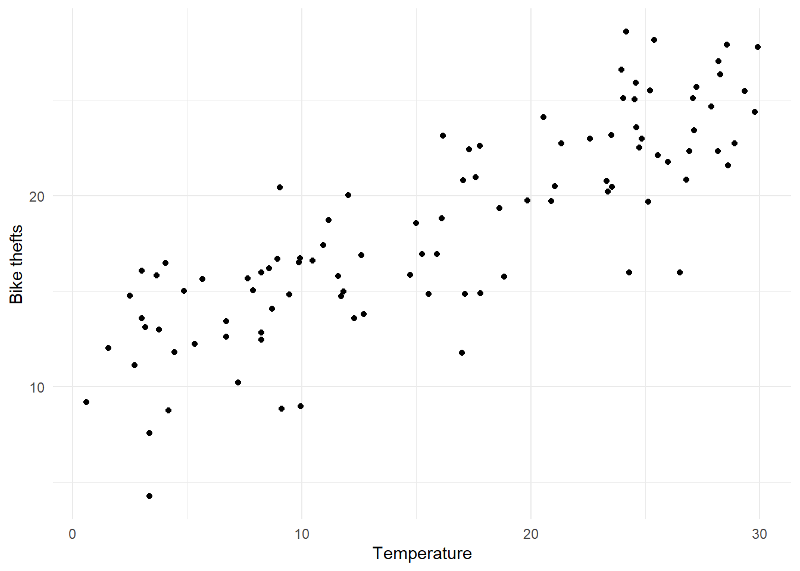
Now that we have our simulated data, let’s define our model and priors in brms and fit the data. Use a normal prior centered around 10 with a standard deviation of 5 for the intercept and a standard normal prior for the regression coefficients. See if you can do this yourself before looking at the solutions.
::: Hint: check out ?priors and ?brm to specify the priors and call the model. How do you get only samples from the prior? :::
Code
# Define priors
priors <- prior(normal(10, 5), class = "Intercept") +
prior(normal(0, 1), class = "b")
# Specify and fit the model, note the sample_prior = "only"
# this makes sure we are going to look at the prior predictive samples.
fit <- brm(bike_thefts ~ temperature, data = data,
prior = priors, family = gaussian(),
sample_prior = "only", seed = 555)Compiling Stan program...Start sampling
SAMPLING FOR MODEL 'anon_model' NOW (CHAIN 1).
Chain 1:
Chain 1: Gradient evaluation took 4.3e-05 seconds
Chain 1: 1000 transitions using 10 leapfrog steps per transition would take 0.43 seconds.
Chain 1: Adjust your expectations accordingly!
Chain 1:
Chain 1:
Chain 1: Iteration: 1 / 2000 [ 0%] (Warmup)
Chain 1: Iteration: 200 / 2000 [ 10%] (Warmup)
Chain 1: Iteration: 400 / 2000 [ 20%] (Warmup)
Chain 1: Iteration: 600 / 2000 [ 30%] (Warmup)
Chain 1: Iteration: 800 / 2000 [ 40%] (Warmup)
Chain 1: Iteration: 1000 / 2000 [ 50%] (Warmup)
Chain 1: Iteration: 1001 / 2000 [ 50%] (Sampling)
Chain 1: Iteration: 1200 / 2000 [ 60%] (Sampling)
Chain 1: Iteration: 1400 / 2000 [ 70%] (Sampling)
Chain 1: Iteration: 1600 / 2000 [ 80%] (Sampling)
Chain 1: Iteration: 1800 / 2000 [ 90%] (Sampling)
Chain 1: Iteration: 2000 / 2000 [100%] (Sampling)
Chain 1:
Chain 1: Elapsed Time: 0.039 seconds (Warm-up)
Chain 1: 0.037 seconds (Sampling)
Chain 1: 0.076 seconds (Total)
Chain 1:
SAMPLING FOR MODEL 'anon_model' NOW (CHAIN 2).
Chain 2:
Chain 2: Gradient evaluation took 1e-05 seconds
Chain 2: 1000 transitions using 10 leapfrog steps per transition would take 0.1 seconds.
Chain 2: Adjust your expectations accordingly!
Chain 2:
Chain 2:
Chain 2: Iteration: 1 / 2000 [ 0%] (Warmup)
Chain 2: Iteration: 200 / 2000 [ 10%] (Warmup)
Chain 2: Iteration: 400 / 2000 [ 20%] (Warmup)
Chain 2: Iteration: 600 / 2000 [ 30%] (Warmup)
Chain 2: Iteration: 800 / 2000 [ 40%] (Warmup)
Chain 2: Iteration: 1000 / 2000 [ 50%] (Warmup)
Chain 2: Iteration: 1001 / 2000 [ 50%] (Sampling)
Chain 2: Iteration: 1200 / 2000 [ 60%] (Sampling)
Chain 2: Iteration: 1400 / 2000 [ 70%] (Sampling)
Chain 2: Iteration: 1600 / 2000 [ 80%] (Sampling)
Chain 2: Iteration: 1800 / 2000 [ 90%] (Sampling)
Chain 2: Iteration: 2000 / 2000 [100%] (Sampling)
Chain 2:
Chain 2: Elapsed Time: 0.035 seconds (Warm-up)
Chain 2: 0.058 seconds (Sampling)
Chain 2: 0.093 seconds (Total)
Chain 2:
SAMPLING FOR MODEL 'anon_model' NOW (CHAIN 3).
Chain 3:
Chain 3: Gradient evaluation took 1.3e-05 seconds
Chain 3: 1000 transitions using 10 leapfrog steps per transition would take 0.13 seconds.
Chain 3: Adjust your expectations accordingly!
Chain 3:
Chain 3:
Chain 3: Iteration: 1 / 2000 [ 0%] (Warmup)
Chain 3: Iteration: 200 / 2000 [ 10%] (Warmup)
Chain 3: Iteration: 400 / 2000 [ 20%] (Warmup)
Chain 3: Iteration: 600 / 2000 [ 30%] (Warmup)
Chain 3: Iteration: 800 / 2000 [ 40%] (Warmup)
Chain 3: Iteration: 1000 / 2000 [ 50%] (Warmup)
Chain 3: Iteration: 1001 / 2000 [ 50%] (Sampling)
Chain 3: Iteration: 1200 / 2000 [ 60%] (Sampling)
Chain 3: Iteration: 1400 / 2000 [ 70%] (Sampling)
Chain 3: Iteration: 1600 / 2000 [ 80%] (Sampling)
Chain 3: Iteration: 1800 / 2000 [ 90%] (Sampling)
Chain 3: Iteration: 2000 / 2000 [100%] (Sampling)
Chain 3:
Chain 3: Elapsed Time: 0.054 seconds (Warm-up)
Chain 3: 0.032 seconds (Sampling)
Chain 3: 0.086 seconds (Total)
Chain 3:
SAMPLING FOR MODEL 'anon_model' NOW (CHAIN 4).
Chain 4:
Chain 4: Gradient evaluation took 9e-06 seconds
Chain 4: 1000 transitions using 10 leapfrog steps per transition would take 0.09 seconds.
Chain 4: Adjust your expectations accordingly!
Chain 4:
Chain 4:
Chain 4: Iteration: 1 / 2000 [ 0%] (Warmup)
Chain 4: Iteration: 200 / 2000 [ 10%] (Warmup)
Chain 4: Iteration: 400 / 2000 [ 20%] (Warmup)
Chain 4: Iteration: 600 / 2000 [ 30%] (Warmup)
Chain 4: Iteration: 800 / 2000 [ 40%] (Warmup)
Chain 4: Iteration: 1000 / 2000 [ 50%] (Warmup)
Chain 4: Iteration: 1001 / 2000 [ 50%] (Sampling)
Chain 4: Iteration: 1200 / 2000 [ 60%] (Sampling)
Chain 4: Iteration: 1400 / 2000 [ 70%] (Sampling)
Chain 4: Iteration: 1600 / 2000 [ 80%] (Sampling)
Chain 4: Iteration: 1800 / 2000 [ 90%] (Sampling)
Chain 4: Iteration: 2000 / 2000 [100%] (Sampling)
Chain 4:
Chain 4: Elapsed Time: 0.034 seconds (Warm-up)
Chain 4: 0.051 seconds (Sampling)
Chain 4: 0.085 seconds (Total)
Chain 4: Great, once we’ve fit our model, we can use the pp_check function in brms to look at the prior predictive checks. These are build upon work in the bayesplot package, you could use those functions directly, but that requires more effort.
There are many types of checks that can be utilized. In Table 1 you can find all options. These call functions come from the bayesplot package. You can look these up by using these in combination with two prefixes (also an argument in the pp_check function), ppc (posterior predictive check) or ppd (posterior predictive distribution), the latter being the same as the former except that the observed data is not shown. For example, you can call ?bayesplot::ppc_bars to get more information about this function from bayesplot.
pp_check argument type =.
| Types | |||
|---|---|---|---|
| bars | error_scatter_avg_vs_x | intervals | scatter |
| bars_grouped | freqpoly | intervals_grouped | scatter_avg |
| boxplot | freqpoly_grouped | km_overlay | scatter_avg_grouped |
| dens | hist | km_overlay_grouped | stat |
| dens_overlay | intervals | loo_intervals | stat_2d |
| dens_overlay_grouped | intervals_grouped | loo_pit | stat_freqpoly |
| ecdf_overlay | km_overlay | loo_pit_overlay | stat_freqpoly_grouped |
| ecdf_overlay_grouped | km_overlay_grouped | loo_pit_qq | stat_grouped |
| error_binned | loo_intervals | loo_ribbon | violin_grouped |
| error_hist | loo_pit | ribbon | |
| error_hist_grouped | loo_pit_overlay | ribbon_grouped | |
| error_scatter | loo_pit_qq | rootogram | |
| error_scatter_avg | loo_ribbon | scatter | |
| error_scatter_avg_grouped | ribbon | scatter_avg | |
| ribbon_grouped | scatter_avg_grouped |
We will for now use the helper function pp_check from brms so we don’t have to extract and manipulate data. The most basic thing we can look at is to see what possible distributions of the data are simulated.
pp_check(fit, prefix = "ppd", ndraws = 100)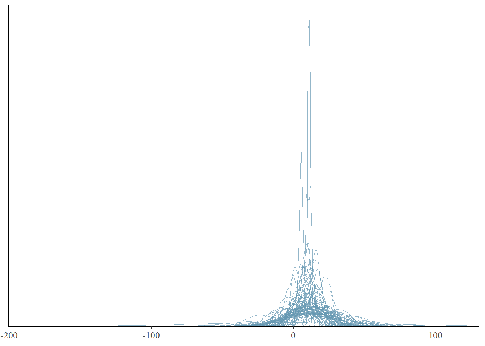
Note that we didn’t specify any type. If we don’t specify the type dens_overlay is used.
pp_check(fit, type = "dens_overlay", prefix = "ppd", ndraws = 100)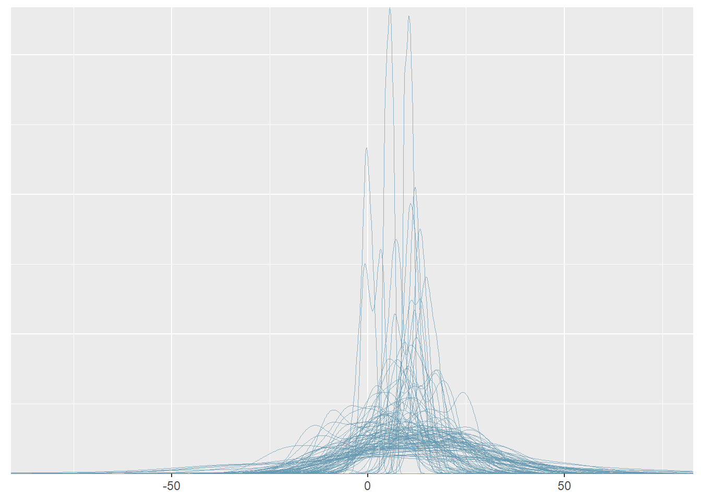
We see that our priors indicate that distributions of possible data of stolen bikes include negative numbers. That would not be something realistic. We could adjust our model to not allow negative values. This could be done by adjusting the priors so that these values do not occur. We could also restrict values to be positive by means of truncation. The formula would change into bike_thefts | resp_trunc(lb = 0) ~ temperature. Unfortunately, truncated distributions are harder to work with and interpret, sometimes leading to computational issues. So for now, we will not truncate our model, but look a bit further to see if this is a true problem. In any case, we want our models to cover the range of values that are plausible, and many predicted distributions are falling between 0 and 50 bikes stolen, which given our small village example is plausible. However, the predicted distributions seem narrow, perhaps we can look at summary statistics of the predicted distributions to get more information.
We can see summary statistics for the predicted distributions by using type = stat. For instance, what about the means or standard deviations of these distributions.
pp_check(fit, prefix = "ppd", type = "stat", stat = "mean")Using all posterior draws for ppc type 'stat' by default.`stat_bin()` using `bins = 30`. Pick better value with `binwidth`.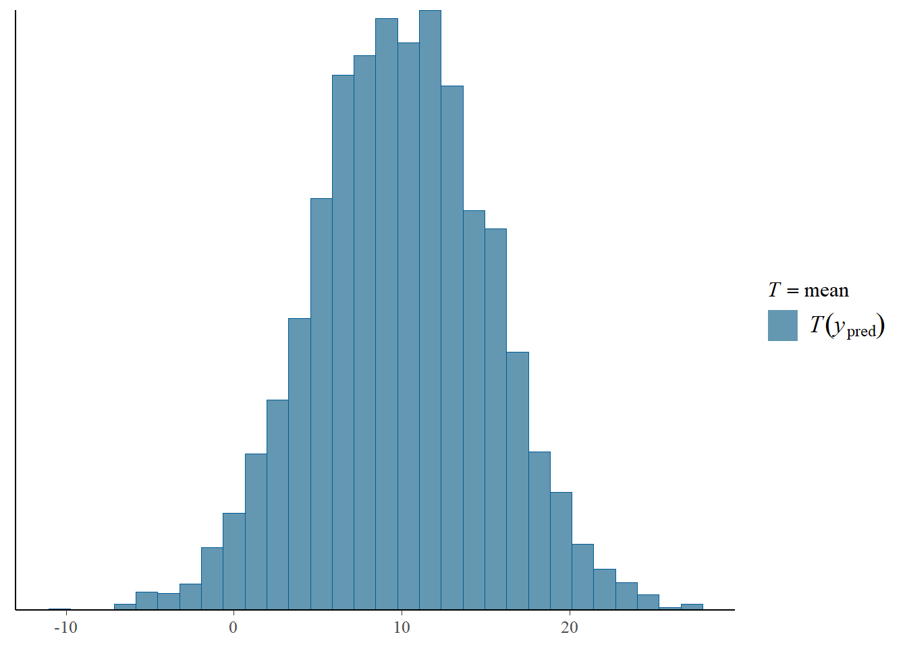
pp_check(fit, prefix = "ppd", type = "stat", stat = "sd")Using all posterior draws for ppc type 'stat' by default.
`stat_bin()` using `bins = 30`. Pick better value with `binwidth`.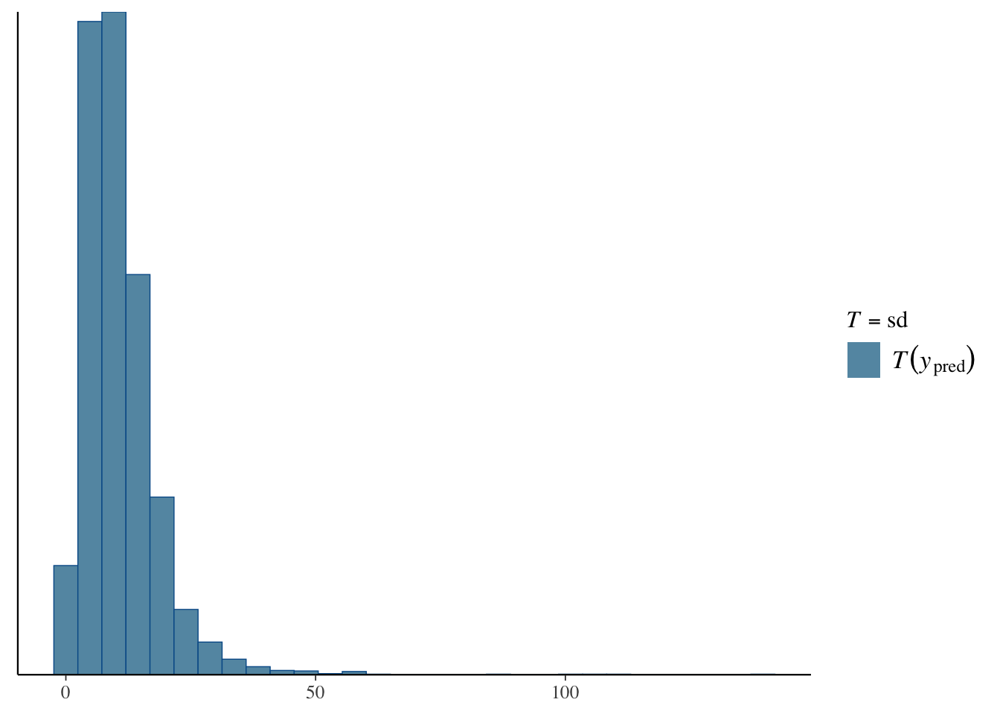
Or maybe what combinations of the two.
pp_check(fit, prefix = "ppd", type = "stat_2d")Using all posterior draws for ppc type 'stat_2d' by default.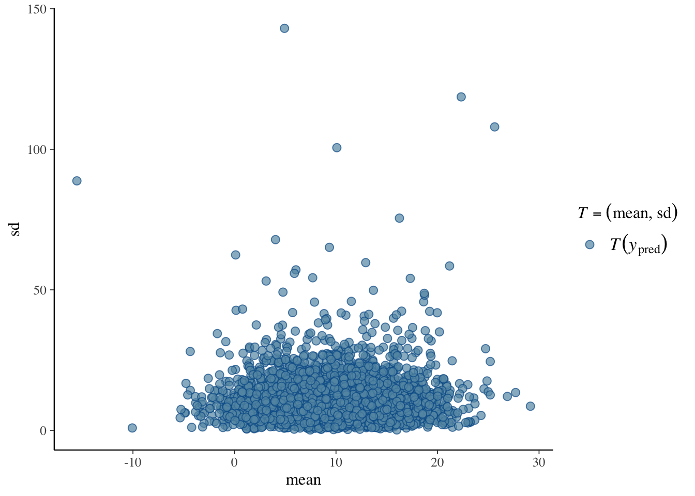
We see that most models produce positive means with small standard deviations. Perhaps we think these values are plausible, especially since they produce a broad range of possibilities. Perhaps we think we need to adjust our model a bit. Let’s say that we would like to imply a bit more bike thefts on average and more uncertainty. We could adjust our priors to incorporate this. We also specify a broader prior on the residuals. To see which prior was used originally by default we can extract the prior from the fitobject:
fit$prior prior class coef group resp dpar nlpar lb ub
normal(0, 1) b
normal(0, 1) b temperature
normal(10, 5) Intercept
student_t(3, 0, 5.9) sigma 0
source
user
(vectorized)
user
defaultCode
priors2 <- prior(normal(15, 7), class = "Intercept") +
prior(normal(0, 2), class = "b") +
prior(student_t(3, 0, 10), class = "sigma")
# Specify and fit the model, note the sample_prior = "only"
# this makes sure we are going to look at the prior predictive samples.
fit2 <- brm(bike_thefts ~ temperature, data = data,
prior = priors2, family = gaussian(),
sample_prior = "only", seed = 555)Compiling Stan program...Start sampling
SAMPLING FOR MODEL 'anon_model' NOW (CHAIN 1).
Chain 1:
Chain 1: Gradient evaluation took 4e-05 seconds
Chain 1: 1000 transitions using 10 leapfrog steps per transition would take 0.4 seconds.
Chain 1: Adjust your expectations accordingly!
Chain 1:
Chain 1:
Chain 1: Iteration: 1 / 2000 [ 0%] (Warmup)
Chain 1: Iteration: 200 / 2000 [ 10%] (Warmup)
Chain 1: Iteration: 400 / 2000 [ 20%] (Warmup)
Chain 1: Iteration: 600 / 2000 [ 30%] (Warmup)
Chain 1: Iteration: 800 / 2000 [ 40%] (Warmup)
Chain 1: Iteration: 1000 / 2000 [ 50%] (Warmup)
Chain 1: Iteration: 1001 / 2000 [ 50%] (Sampling)
Chain 1: Iteration: 1200 / 2000 [ 60%] (Sampling)
Chain 1: Iteration: 1400 / 2000 [ 70%] (Sampling)
Chain 1: Iteration: 1600 / 2000 [ 80%] (Sampling)
Chain 1: Iteration: 1800 / 2000 [ 90%] (Sampling)
Chain 1: Iteration: 2000 / 2000 [100%] (Sampling)
Chain 1:
Chain 1: Elapsed Time: 0.054 seconds (Warm-up)
Chain 1: 0.052 seconds (Sampling)
Chain 1: 0.106 seconds (Total)
Chain 1:
SAMPLING FOR MODEL 'anon_model' NOW (CHAIN 2).
Chain 2:
Chain 2: Gradient evaluation took 1.6e-05 seconds
Chain 2: 1000 transitions using 10 leapfrog steps per transition would take 0.16 seconds.
Chain 2: Adjust your expectations accordingly!
Chain 2:
Chain 2:
Chain 2: Iteration: 1 / 2000 [ 0%] (Warmup)
Chain 2: Iteration: 200 / 2000 [ 10%] (Warmup)
Chain 2: Iteration: 400 / 2000 [ 20%] (Warmup)
Chain 2: Iteration: 600 / 2000 [ 30%] (Warmup)
Chain 2: Iteration: 800 / 2000 [ 40%] (Warmup)
Chain 2: Iteration: 1000 / 2000 [ 50%] (Warmup)
Chain 2: Iteration: 1001 / 2000 [ 50%] (Sampling)
Chain 2: Iteration: 1200 / 2000 [ 60%] (Sampling)
Chain 2: Iteration: 1400 / 2000 [ 70%] (Sampling)
Chain 2: Iteration: 1600 / 2000 [ 80%] (Sampling)
Chain 2: Iteration: 1800 / 2000 [ 90%] (Sampling)
Chain 2: Iteration: 2000 / 2000 [100%] (Sampling)
Chain 2:
Chain 2: Elapsed Time: 0.054 seconds (Warm-up)
Chain 2: 0.049 seconds (Sampling)
Chain 2: 0.103 seconds (Total)
Chain 2:
SAMPLING FOR MODEL 'anon_model' NOW (CHAIN 3).
Chain 3:
Chain 3: Gradient evaluation took 9e-06 seconds
Chain 3: 1000 transitions using 10 leapfrog steps per transition would take 0.09 seconds.
Chain 3: Adjust your expectations accordingly!
Chain 3:
Chain 3:
Chain 3: Iteration: 1 / 2000 [ 0%] (Warmup)
Chain 3: Iteration: 200 / 2000 [ 10%] (Warmup)
Chain 3: Iteration: 400 / 2000 [ 20%] (Warmup)
Chain 3: Iteration: 600 / 2000 [ 30%] (Warmup)
Chain 3: Iteration: 800 / 2000 [ 40%] (Warmup)
Chain 3: Iteration: 1000 / 2000 [ 50%] (Warmup)
Chain 3: Iteration: 1001 / 2000 [ 50%] (Sampling)
Chain 3: Iteration: 1200 / 2000 [ 60%] (Sampling)
Chain 3: Iteration: 1400 / 2000 [ 70%] (Sampling)
Chain 3: Iteration: 1600 / 2000 [ 80%] (Sampling)
Chain 3: Iteration: 1800 / 2000 [ 90%] (Sampling)
Chain 3: Iteration: 2000 / 2000 [100%] (Sampling)
Chain 3:
Chain 3: Elapsed Time: 0.041 seconds (Warm-up)
Chain 3: 0.054 seconds (Sampling)
Chain 3: 0.095 seconds (Total)
Chain 3:
SAMPLING FOR MODEL 'anon_model' NOW (CHAIN 4).
Chain 4:
Chain 4: Gradient evaluation took 1.1e-05 seconds
Chain 4: 1000 transitions using 10 leapfrog steps per transition would take 0.11 seconds.
Chain 4: Adjust your expectations accordingly!
Chain 4:
Chain 4:
Chain 4: Iteration: 1 / 2000 [ 0%] (Warmup)
Chain 4: Iteration: 200 / 2000 [ 10%] (Warmup)
Chain 4: Iteration: 400 / 2000 [ 20%] (Warmup)
Chain 4: Iteration: 600 / 2000 [ 30%] (Warmup)
Chain 4: Iteration: 800 / 2000 [ 40%] (Warmup)
Chain 4: Iteration: 1000 / 2000 [ 50%] (Warmup)
Chain 4: Iteration: 1001 / 2000 [ 50%] (Sampling)
Chain 4: Iteration: 1200 / 2000 [ 60%] (Sampling)
Chain 4: Iteration: 1400 / 2000 [ 70%] (Sampling)
Chain 4: Iteration: 1600 / 2000 [ 80%] (Sampling)
Chain 4: Iteration: 1800 / 2000 [ 90%] (Sampling)
Chain 4: Iteration: 2000 / 2000 [100%] (Sampling)
Chain 4:
Chain 4: Elapsed Time: 0.043 seconds (Warm-up)
Chain 4: 0.039 seconds (Sampling)
Chain 4: 0.082 seconds (Total)
Chain 4: Now let’s check what changed.
# note that we add titles and ensure the limits of the x asis are equal.
pp_check(fit, type = "dens_overlay", prefix = "ppd", ndraws = 100) +
ggtitle("Original priors") + xlim(-50, 100) + ylim(0, 0.5)Warning: Removed 10 rows containing non-finite outside the scale range
(`stat_density()`).pp_check(fit2, type = "dens_overlay", prefix = "ppd", ndraws = 100) +
ggtitle("New priors") + xlim(-50, 100) + ylim(0, 0.5)Warning: Removed 123 rows containing non-finite outside the scale range
(`stat_density()`).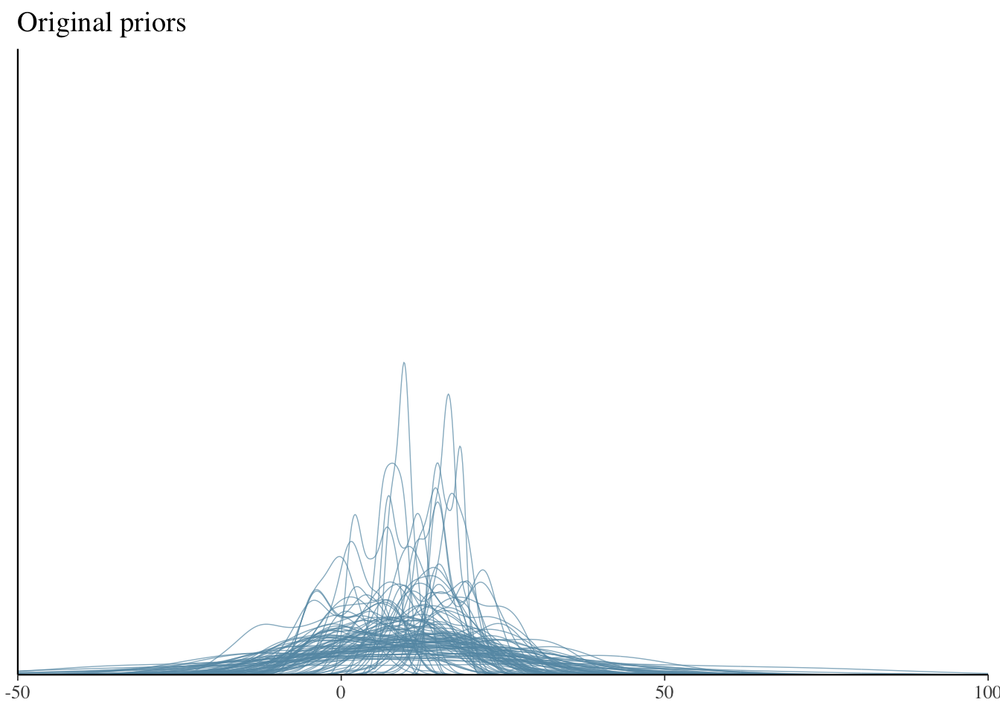
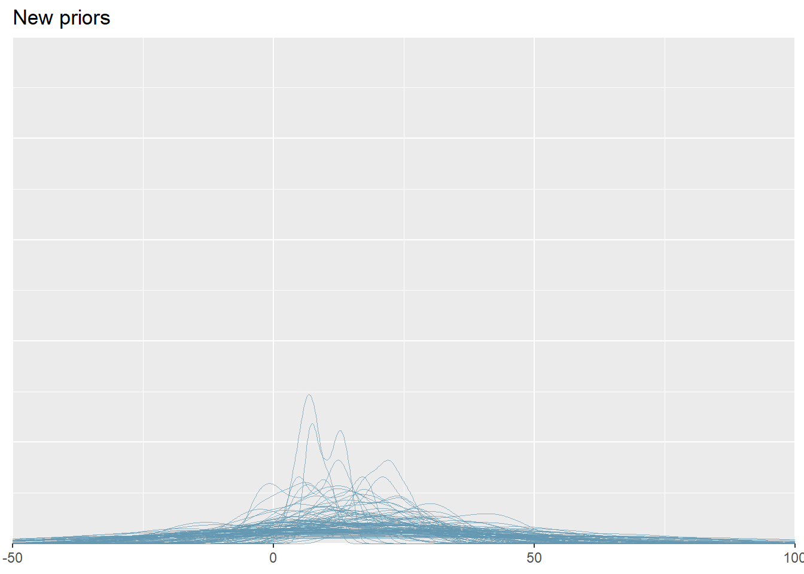
The new priors seem much more flat and wide, but it’s hard to see. Maybe checking the statistics will help more.
pp_check(fit, prefix = "ppd", type = "stat_2d") +
ggtitle("Original priors") + xlim(-20, 40) + ylim(0, 150)Using all posterior draws for ppc type 'stat_2d' by default.pp_check(fit2, prefix = "ppd", type = "stat_2d") +
ggtitle("New priors") + xlim(-20, 40) + ylim(0, 150)Using all posterior draws for ppc type 'stat_2d' by default.Warning: Removed 4 rows containing missing values or values outside the scale range
(`geom_point()`).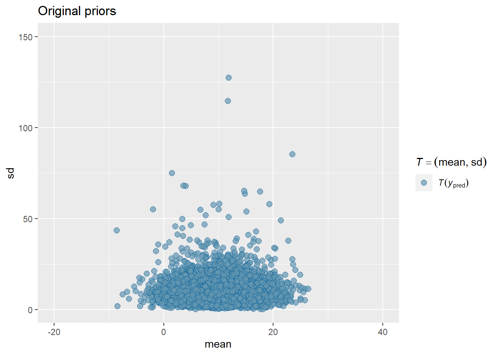
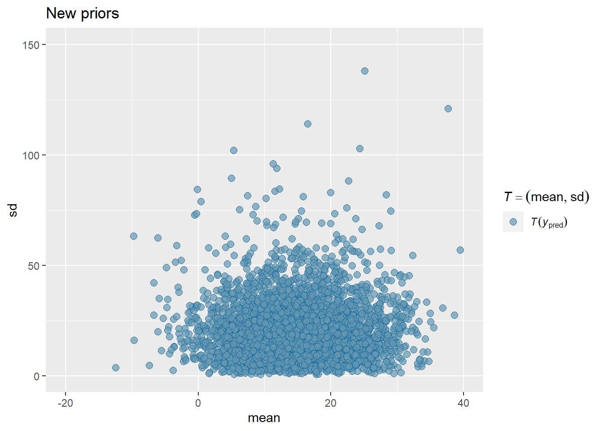
We indeed see much more spread in the predicted summary statistics, indicating more uncertainty beforehand. The new priors indicate a bit higher expected means and more variance in the predicted data sets. This is what we wanted and now we are happy with our priors and we can fit our model with our “observed” (simulated) data.
Posterior Predictive Checking
The first step before we can do posterior predictive checking is to obtain the posterior. We change the sample_prior = 'only' argument into sample_prior = 'yes' so that the priors are saved and we fit the data using our new priors.
Code
fit3 <- brm(bike_thefts ~ temperature, data = data,
prior = priors2, family = gaussian(),
sample_prior = "yes", seed = 555)Compiling Stan program...Start sampling
SAMPLING FOR MODEL 'anon_model' NOW (CHAIN 1).
Chain 1:
Chain 1: Gradient evaluation took 7.2e-05 seconds
Chain 1: 1000 transitions using 10 leapfrog steps per transition would take 0.72 seconds.
Chain 1: Adjust your expectations accordingly!
Chain 1:
Chain 1:
Chain 1: Iteration: 1 / 2000 [ 0%] (Warmup)
Chain 1: Iteration: 200 / 2000 [ 10%] (Warmup)
Chain 1: Iteration: 400 / 2000 [ 20%] (Warmup)
Chain 1: Iteration: 600 / 2000 [ 30%] (Warmup)
Chain 1: Iteration: 800 / 2000 [ 40%] (Warmup)
Chain 1: Iteration: 1000 / 2000 [ 50%] (Warmup)
Chain 1: Iteration: 1001 / 2000 [ 50%] (Sampling)
Chain 1: Iteration: 1200 / 2000 [ 60%] (Sampling)
Chain 1: Iteration: 1400 / 2000 [ 70%] (Sampling)
Chain 1: Iteration: 1600 / 2000 [ 80%] (Sampling)
Chain 1: Iteration: 1800 / 2000 [ 90%] (Sampling)
Chain 1: Iteration: 2000 / 2000 [100%] (Sampling)
Chain 1:
Chain 1: Elapsed Time: 0.061 seconds (Warm-up)
Chain 1: 0.046 seconds (Sampling)
Chain 1: 0.107 seconds (Total)
Chain 1:
SAMPLING FOR MODEL 'anon_model' NOW (CHAIN 2).
Chain 2:
Chain 2: Gradient evaluation took 1.4e-05 seconds
Chain 2: 1000 transitions using 10 leapfrog steps per transition would take 0.14 seconds.
Chain 2: Adjust your expectations accordingly!
Chain 2:
Chain 2:
Chain 2: Iteration: 1 / 2000 [ 0%] (Warmup)
Chain 2: Iteration: 200 / 2000 [ 10%] (Warmup)
Chain 2: Iteration: 400 / 2000 [ 20%] (Warmup)
Chain 2: Iteration: 600 / 2000 [ 30%] (Warmup)
Chain 2: Iteration: 800 / 2000 [ 40%] (Warmup)
Chain 2: Iteration: 1000 / 2000 [ 50%] (Warmup)
Chain 2: Iteration: 1001 / 2000 [ 50%] (Sampling)
Chain 2: Iteration: 1200 / 2000 [ 60%] (Sampling)
Chain 2: Iteration: 1400 / 2000 [ 70%] (Sampling)
Chain 2: Iteration: 1600 / 2000 [ 80%] (Sampling)
Chain 2: Iteration: 1800 / 2000 [ 90%] (Sampling)
Chain 2: Iteration: 2000 / 2000 [100%] (Sampling)
Chain 2:
Chain 2: Elapsed Time: 0.077 seconds (Warm-up)
Chain 2: 0.049 seconds (Sampling)
Chain 2: 0.126 seconds (Total)
Chain 2:
SAMPLING FOR MODEL 'anon_model' NOW (CHAIN 3).
Chain 3:
Chain 3: Gradient evaluation took 1.4e-05 seconds
Chain 3: 1000 transitions using 10 leapfrog steps per transition would take 0.14 seconds.
Chain 3: Adjust your expectations accordingly!
Chain 3:
Chain 3:
Chain 3: Iteration: 1 / 2000 [ 0%] (Warmup)
Chain 3: Iteration: 200 / 2000 [ 10%] (Warmup)
Chain 3: Iteration: 400 / 2000 [ 20%] (Warmup)
Chain 3: Iteration: 600 / 2000 [ 30%] (Warmup)
Chain 3: Iteration: 800 / 2000 [ 40%] (Warmup)
Chain 3: Iteration: 1000 / 2000 [ 50%] (Warmup)
Chain 3: Iteration: 1001 / 2000 [ 50%] (Sampling)
Chain 3: Iteration: 1200 / 2000 [ 60%] (Sampling)
Chain 3: Iteration: 1400 / 2000 [ 70%] (Sampling)
Chain 3: Iteration: 1600 / 2000 [ 80%] (Sampling)
Chain 3: Iteration: 1800 / 2000 [ 90%] (Sampling)
Chain 3: Iteration: 2000 / 2000 [100%] (Sampling)
Chain 3:
Chain 3: Elapsed Time: 0.069 seconds (Warm-up)
Chain 3: 0.055 seconds (Sampling)
Chain 3: 0.124 seconds (Total)
Chain 3:
SAMPLING FOR MODEL 'anon_model' NOW (CHAIN 4).
Chain 4:
Chain 4: Gradient evaluation took 1.3e-05 seconds
Chain 4: 1000 transitions using 10 leapfrog steps per transition would take 0.13 seconds.
Chain 4: Adjust your expectations accordingly!
Chain 4:
Chain 4:
Chain 4: Iteration: 1 / 2000 [ 0%] (Warmup)
Chain 4: Iteration: 200 / 2000 [ 10%] (Warmup)
Chain 4: Iteration: 400 / 2000 [ 20%] (Warmup)
Chain 4: Iteration: 600 / 2000 [ 30%] (Warmup)
Chain 4: Iteration: 800 / 2000 [ 40%] (Warmup)
Chain 4: Iteration: 1000 / 2000 [ 50%] (Warmup)
Chain 4: Iteration: 1001 / 2000 [ 50%] (Sampling)
Chain 4: Iteration: 1200 / 2000 [ 60%] (Sampling)
Chain 4: Iteration: 1400 / 2000 [ 70%] (Sampling)
Chain 4: Iteration: 1600 / 2000 [ 80%] (Sampling)
Chain 4: Iteration: 1800 / 2000 [ 90%] (Sampling)
Chain 4: Iteration: 2000 / 2000 [100%] (Sampling)
Chain 4:
Chain 4: Elapsed Time: 0.056 seconds (Warm-up)
Chain 4: 0.045 seconds (Sampling)
Chain 4: 0.101 seconds (Total)
Chain 4: Now let’s look at the summary of the model. With brms we can just call the fit object.
fit3 Family: gaussian
Links: mu = identity; sigma = identity
Formula: bike_thefts ~ temperature
Data: data (Number of observations: 100)
Draws: 4 chains, each with iter = 2000; warmup = 1000; thin = 1;
total post-warmup draws = 4000
Regression Coefficients:
Estimate Est.Error l-95% CI u-95% CI Rhat Bulk_ESS Tail_ESS
Intercept 10.34 0.63 9.14 11.60 1.00 3897 2886
temperature 0.50 0.03 0.44 0.57 1.00 4246 3128
Further Distributional Parameters:
Estimate Est.Error l-95% CI u-95% CI Rhat Bulk_ESS Tail_ESS
sigma 3.00 0.22 2.61 3.46 1.00 3775 3312
Draws were sampled using sampling(NUTS). For each parameter, Bulk_ESS
and Tail_ESS are effective sample size measures, and Rhat is the potential
scale reduction factor on split chains (at convergence, Rhat = 1).How well are we estimating? Remember that we simulated the data, so we know the true parameter values. These were intercept = 10, slope = 0.5 and noise_sd = 3. The model finds these values back very accurately. Great! We could check the model fit and computation. For instance, get some chain plots. And did you know that you could change the color schemes using color_scheme_set()? You can even set it such that the colors are adjusted to account for the common form of colorblindness and rely less on red-green contrast. These schemes are called “viridis” and there are more options. Let’s see some options we could use.
bayesplot::color_scheme_view(scheme = c("blue", "red", "green",
"viridis", "viridisA"))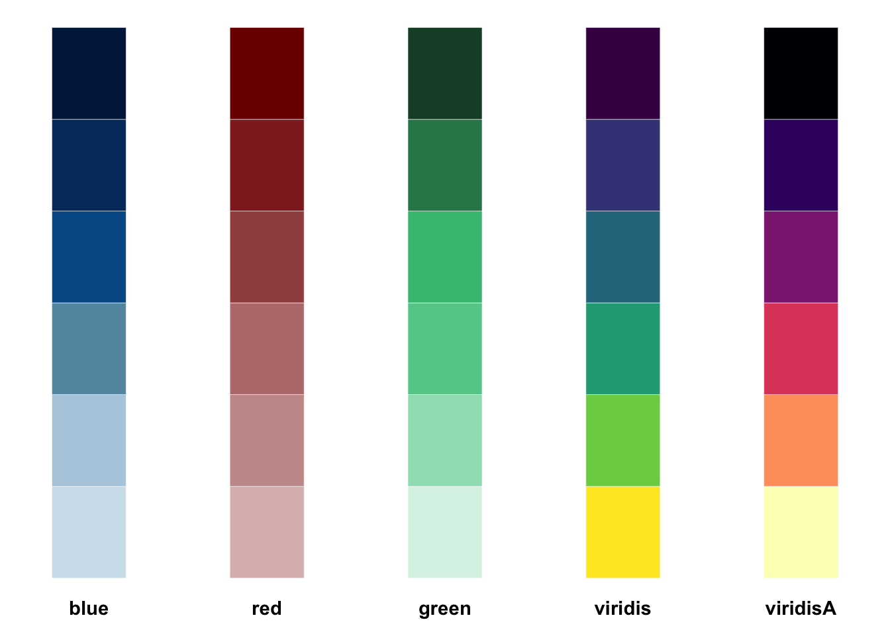
After that quick sidestep, let’s plot our posteriors.
color_scheme_set("viridis")
mcmc_plot(fit3, type = "trace")No divergences to plot.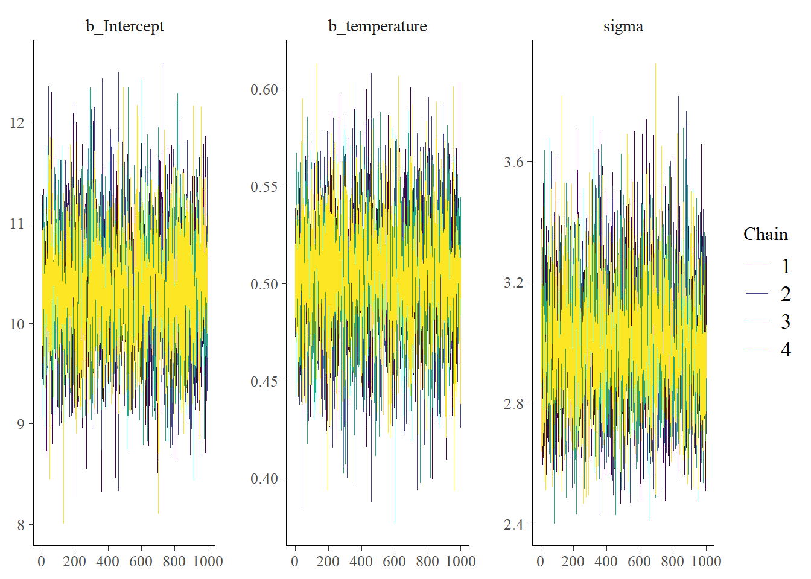
mcmc_plot(fit3, type = "dens")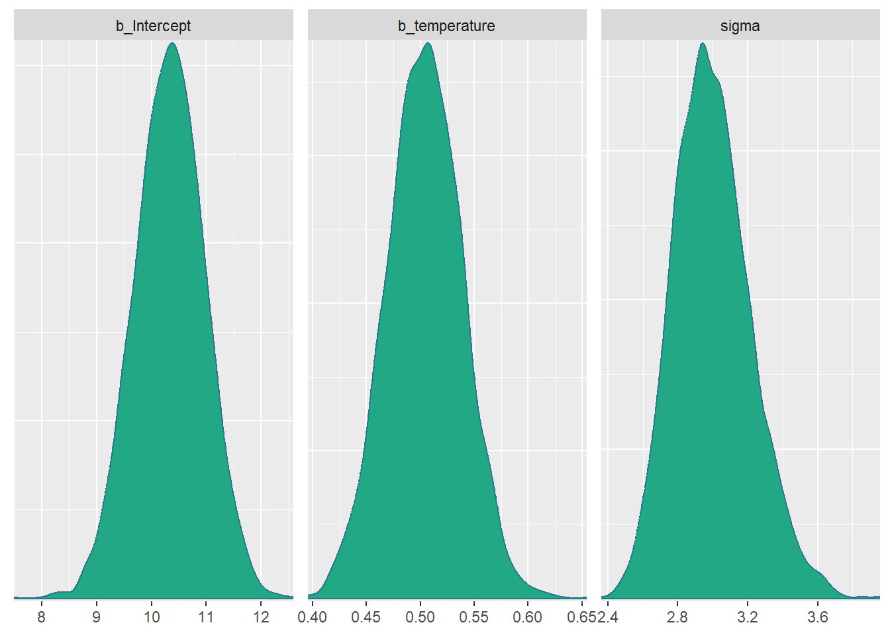
mcmc_plot(fit3, type = "intervals")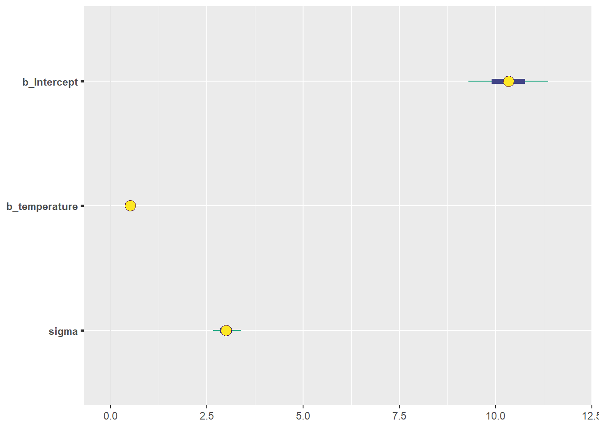
mcmc_plot(fit3, type = "acf")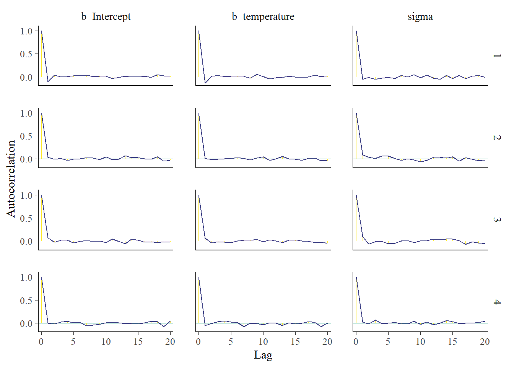
Convergence seems well, the densities are nice and smooth and there is little autocorrelation. But we already had some indications for this. Did you notice that in the output for the fit object we already got information on Rhat and the effective sample size for each parameter? These indicated that everything was going well.
Now let’s look at the posterior predictive checks. We can use the pp_check function again. This time however, we do posterior predictive checks. We already used our data, so it might be nice to also compare what the model looks like compared to our observed data. For that, we use prefix = ppc.
pp_check(fit3, type = "dens_overlay", prefix = "ppc", ndraws = 100)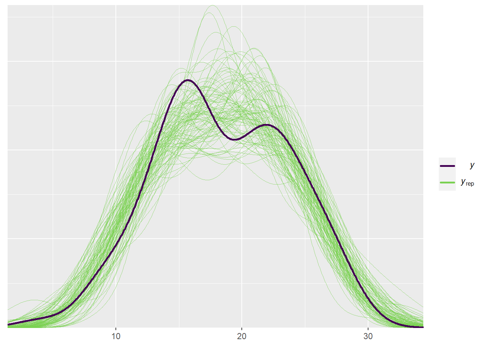
We can see that the data sets that are predicted by the model are very similar to our observed data set. That’s a good sign. Let’s do some additional investigations.
pp_check(fit3, prefix = "ppc", type = "stat_2d")Using all posterior draws for ppc type 'stat_2d' by default.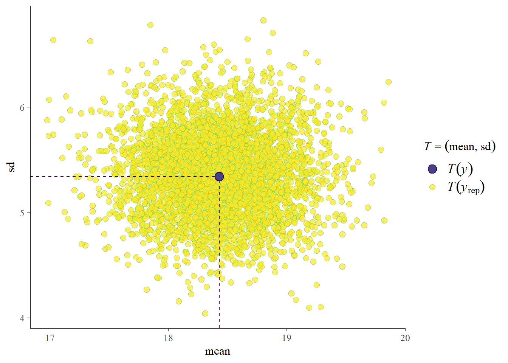
Our observed data is also similar to the predicted data if you look at the mean and standard deviation of the generated data sets based on the posterior draws. This is great, but it’s compared to the data we also used to fit the model with. How would we perform against new data? How about we simulate a bit more new data and see. We use a different seed and sample 50 new cases. We use the same data generating mechanism of course.1
set.seed(95)
# Generate simulated data
n_new <- 50
temperature_new <- runif(n_new, min = 0, max = 30) # Random temperatures between 0 and 30
intercept <- 10
slope <- 0.5
noise_sd <- 3
# round to whole numbers
bike_thefts_new <- (intercept + slope * temperature_new + rnorm(n_new, sd = noise_sd)) %>%
round(., 0)
data_new <- tibble(temperature = temperature_new, bike_thefts = bike_thefts_new)We don’t run the model again, we make use of the fited model we had.
pp_check(fit3, type = "dens_overlay", prefix = "ppc", ndraws = 100,
newdata = data_new)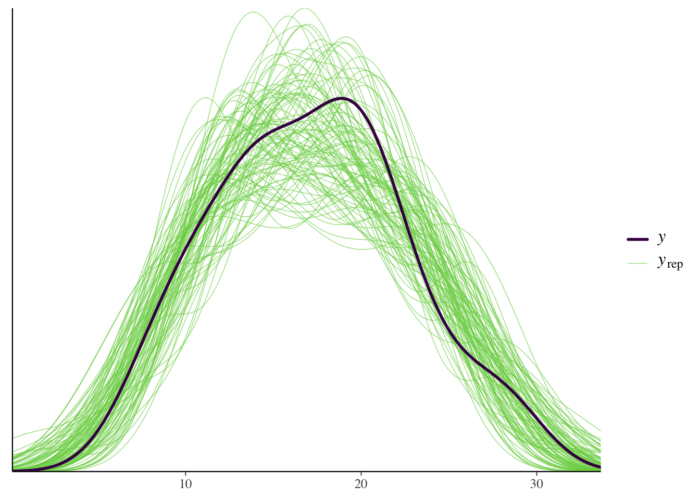
pp_check(fit3, prefix = "ppc", type = "stat_2d",
newdata = data_new)Using all posterior draws for ppc type 'stat_2d' by default.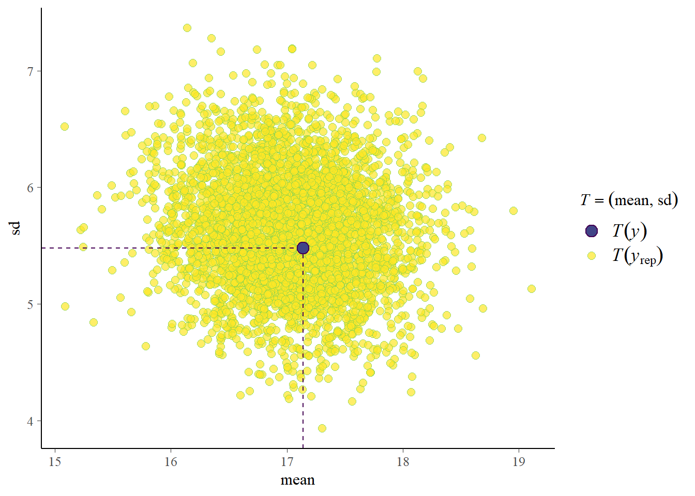
Great, with new data we also do well!
Did we learn?
Now did we learn more about the parameters? Our model did well to predict our existing data and new data. But did we decrease our uncertainty about the parameters in this model? We can provide some nice insights into this. We also sampled from the priors so we can easily visualize this.
mcmc_plot(fit3, type = "dens", variable = c("prior_Intercept", "b_Intercept")) +
xlim(-10, 40)Scale for x is already present.
Adding another scale for x, which will replace the existing scale.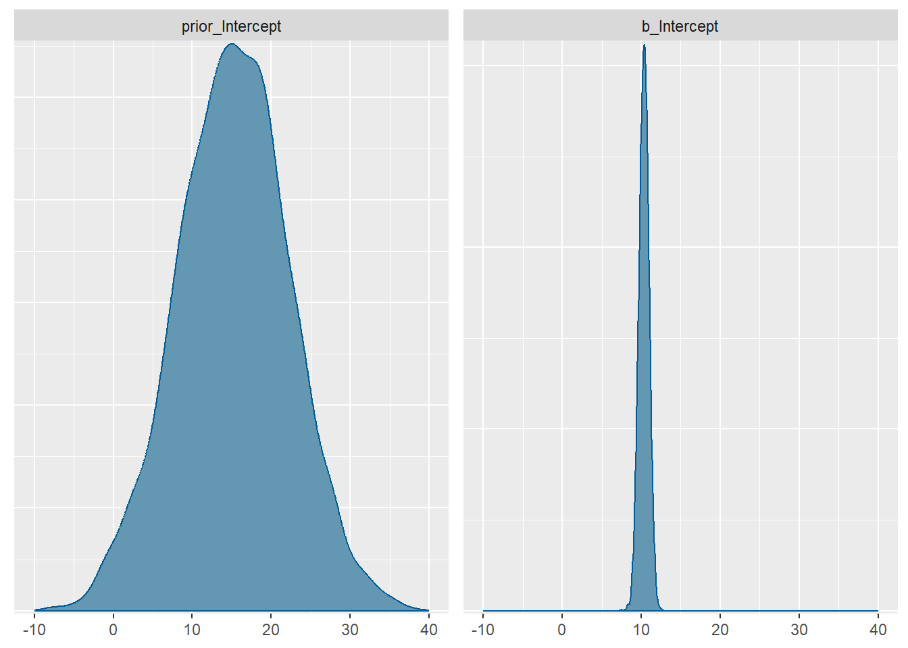
mcmc_plot(fit3, type = "dens", variable = c("prior_b", "b_temperature")) +
xlim(-6, 6)Scale for x is already present.
Adding another scale for x, which will replace the existing scale.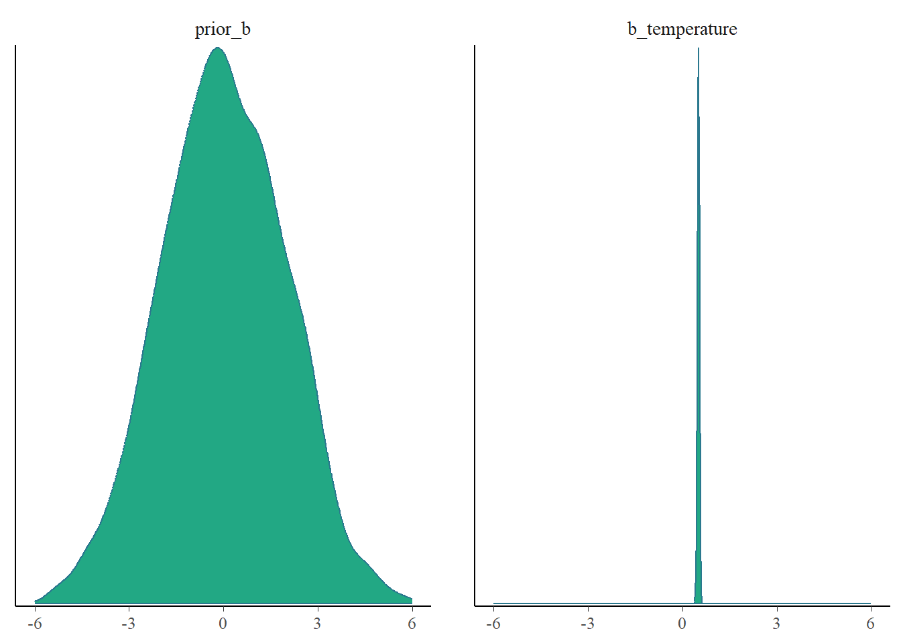
mcmc_plot(fit3, type = "dens", variable = c("prior_sigma", "sigma")) +
xlim(0, 100)Scale for x is already present.
Adding another scale for x, which will replace the existing scale.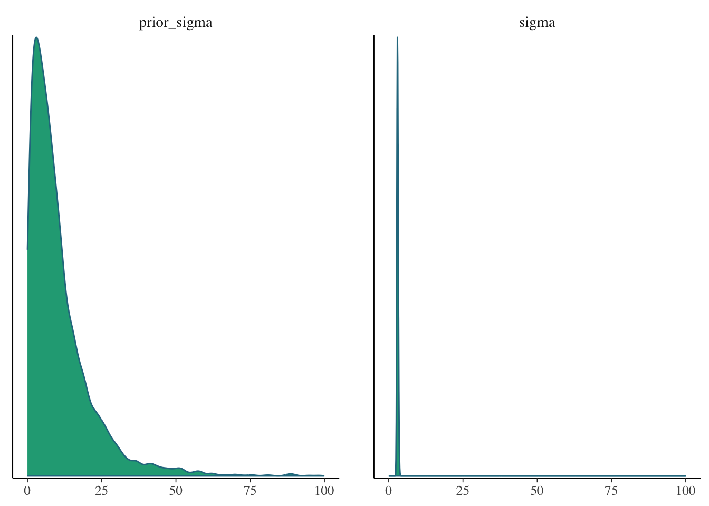
We could also express this in terms of posterior shrinkage2 using
\[ s = 1 - \frac{\sigma^2_\text{posterior}}{\sigma^2_\text{prior}}. \] To calculate this we can use the following code3.
# to get the parameter estimates. Note that Est.Error is sd not variance.
posterior_summary(fit3) Estimate Est.Error Q2.5 Q97.5
b_Intercept 10.3399443 0.63056121 9.1425705 11.595602
b_temperature 0.5042919 0.03362423 0.4359297 0.568145
sigma 2.9988624 0.22029668 2.6051943 3.463655
Intercept 18.4331632 0.31111086 17.8351217 19.049592
prior_Intercept 15.0881507 6.85186687 2.0970309 28.442085
prior_b 0.0146442 1.98026565 -3.8740371 3.757379
prior_sigma 11.1758196 13.61424906 0.3049190 41.961423
lprior -7.2998188 0.02389541 -7.3513347 -7.258264
lp__ -257.3330909 1.24893008 -260.5429172 -255.915319# intercept shrinkage:
1 - ((posterior_summary(fit3)[1, 2]^2) / (posterior_summary(fit3)[5, 2]^2) )[1] 0.9915309# regression coefficient temperature shrinkage:
1 - ((posterior_summary(fit3)[2, 2]^2) / (posterior_summary(fit3)[6, 2]^2) )[1] 0.9997117For both parameters we greatly reduced the uncertainty that we had. Awesome.
Case Study: Applying Posterior Predictive Checks on infants’ speech discrimination data
In this case study we will see how posterior predictive checks can help to decide if a model is useful. We will analyze part of a data set that investigates infants’ speech discrimination performance4. In short, can infants make a distinction between sounds originating from the (parents’) native language compared to sounds not from that language. For each infant there are 12 sequential trials for which the log of the fixation time is recorded. There are 2 different trial types (coded 0 for non-native and 1 for the native language contrast). We look at 12 infants.
First, to get the data load in the time_data.csv file.
data <- read.csv("time_data.csv")
data$trialtype <- factor(data$trialtype)Or simple run the following code.
data <- structure(list(X = 1:144, id = c(1L, 1L, 1L, 1L, 1L, 1L, 1L,
1L, 1L, 1L, 1L, 1L, 2L, 2L, 2L, 2L, 2L, 2L, 2L, 2L, 2L, 2L, 2L,
2L, 3L, 3L, 3L, 3L, 3L, 3L, 3L, 3L, 3L, 3L, 3L, 3L, 4L, 4L, 4L,
4L, 4L, 4L, 4L, 4L, 4L, 4L, 4L, 4L, 5L, 5L, 5L, 5L, 5L, 5L, 5L,
5L, 5L, 5L, 5L, 5L, 6L, 6L, 6L, 6L, 6L, 6L, 6L, 6L, 6L, 6L, 6L,
6L, 7L, 7L, 7L, 7L, 7L, 7L, 7L, 7L, 7L, 7L, 7L, 7L, 8L, 8L, 8L,
8L, 8L, 8L, 8L, 8L, 8L, 8L, 8L, 8L, 9L, 9L, 9L, 9L, 9L, 9L, 9L,
9L, 9L, 9L, 9L, 9L, 10L, 10L, 10L, 10L, 10L, 10L, 10L, 10L, 10L,
10L, 10L, 10L, 11L, 11L, 11L, 11L, 11L, 11L, 11L, 11L, 11L, 11L,
11L, 11L, 12L, 12L, 12L, 12L, 12L, 12L, 12L, 12L, 12L, 12L, 12L,
12L), trialnr = c(1L, 2L, 3L, 4L, 5L, 6L, 7L, 8L, 9L, 10L, 11L,
12L, 1L, 2L, 3L, 4L, 5L, 6L, 7L, 8L, 9L, 10L, 11L, 12L, 1L, 2L,
3L, 4L, 5L, 6L, 7L, 8L, 9L, 10L, 11L, 12L, 1L, 2L, 3L, 4L, 5L,
6L, 7L, 8L, 9L, 10L, 11L, 12L, 1L, 2L, 3L, 4L, 5L, 6L, 7L, 8L,
9L, 10L, 11L, 12L, 1L, 2L, 3L, 4L, 5L, 6L, 7L, 8L, 9L, 10L, 11L,
12L, 1L, 2L, 3L, 4L, 5L, 6L, 7L, 8L, 9L, 10L, 11L, 12L, 1L, 2L,
3L, 4L, 5L, 6L, 7L, 8L, 9L, 10L, 11L, 12L, 1L, 2L, 3L, 4L, 5L,
6L, 7L, 8L, 9L, 10L, 11L, 12L, 1L, 2L, 3L, 4L, 5L, 6L, 7L, 8L,
9L, 10L, 11L, 12L, 1L, 2L, 3L, 4L, 5L, 6L, 7L, 8L, 9L, 10L, 11L,
12L, 1L, 2L, 3L, 4L, 5L, 6L, 7L, 8L, 9L, 10L, 11L, 12L), trialtype = c(1L,
0L, 1L, 1L, 0L, 1L, 1L, 0L, 1L, 1L, 1L, 0L, 1L, 0L, 1L, 1L, 0L,
1L, 1L, 0L, 1L, 1L, 1L, 0L, 1L, 0L, 1L, 1L, 0L, 1L, 1L, 0L, 1L,
1L, 1L, 0L, 0L, 1L, 1L, 1L, 0L, 1L, 1L, 0L, 1L, 1L, 1L, 0L, 1L,
0L, 1L, 1L, 0L, 1L, 1L, 0L, 1L, 1L, 1L, 0L, 1L, 0L, 1L, 1L, 0L,
1L, 1L, 0L, 1L, 1L, 1L, 0L, 1L, 0L, 1L, 1L, 0L, 1L, 1L, 0L, 1L,
1L, 1L, 0L, 0L, 1L, 1L, 1L, 0L, 1L, 1L, 0L, 1L, 1L, 1L, 0L, 0L,
1L, 1L, 1L, 0L, 1L, 1L, 0L, 1L, 1L, 1L, 0L, 0L, 1L, 1L, 1L, 0L,
1L, 1L, 0L, 1L, 1L, 1L, 0L, 1L, 0L, 1L, 1L, 0L, 1L, 1L, 0L, 1L,
1L, 1L, 0L, 1L, 0L, 1L, 1L, 0L, 1L, 1L, 0L, 1L, 1L, 1L, 0L),
loglt = c(3.44839710345777, 3.53237213356788, 3.61573968861916,
3.44138088491651, 3.5081255360832, 4.15812115033749, 3.65176244738011,
4.2520759437998, 4.03277987919124, 4.20782279900151, 3.57818060962778,
4.11417714024445, 3.52853106063541, 3.58489634413745, 3.39252108993193,
3.58478337899651, 3.41077723337721, 3.878751520173, 3.73134697554595,
3.56655533088305, 3.71466499286254, 3.61341894503457, 3.73703353133388,
3.67951874369579, 4.09933527768596, 3.78333176288742, 4.00004342727686,
3.92556990954338, 3.64483232882564, 3.38756777941719, 3.68565218411552,
3.51851393987789, 4.17577265960154, 3.90260113066653, 3.89597473235906,
4.06220580881971, 4.10744740952361, 4.24306286480481, 4.17163870853082,
3.816042340922, 4.24659704910637, 3.69469292633148, 4.22980978295254,
4.48023697181947, 3.83853427051187, 3.56631962152481, 3.7521253072979,
4.08159931273294, 4.1814433955419, 3.46119828862249, 3.80861603542699,
3.78247262416629, 3.71264970162721, 3.62065647981962, 3.66426580014768,
3.64345267648619, 3.34222522936079, 3.28645646974698, 3.29600666931367,
3.87174801899187, 3.53794495929149, 3.72558497227069, 3.81298016603948,
4.1026394836913, 4.01127432890473, 4.15962734065867, 4.17851652373358,
4.34629428204135, 4.02966780267532, 4.01770097122412, 4.23709111227397,
4.03977092693158, 3.67200544502295, 3.77312792403333, 3.76767522402796,
3.80726435527611, 3.75966784468963, 3.97206391600802, 4.27323283404305,
3.9843022319799, 3.94235534970768, 3.73134697554595, 3.81070286094712,
3.68502478510571, 4.05556944006099, 4.15878451772342, 3.58103894877217,
3.98815747255675, 3.88326385958497, 3.85229696582693, 3.61225390609644,
3.32325210017169, 3.3809344633307, 3.62479757896076, 3.45224657452044,
3.38792346697344, 3.91301868374796, 4.02657411815033, 3.74826557266874,
4.08145532782257, 3.76110053895814, 3.24674470972384, 3.80807586809131,
3.59604700754544, 3.63718942214876, 3.82885315967664, 3.6728364541714,
3.8318697742805, 3.62900161928699, 3.72566666031418, 3.95104594813582,
3.79504537042112, 4.21769446020538, 3.85925841746731, 3.68975269613916,
4.14044518834787, 3.63508143601087, 3.50542132758328, 3.5856862784525,
4.03116599966066, 3.57645653240562, 4.11843007712209, 3.93343666782628,
4.08282126093933, 4.57753775449384, 3.76745271809777, 3.52166101511207,
3.93464992290071, 4.08055433898877, 4.34228447422575, 4.02251085043403,
4.45086469237977, 4.60527271532368, 4.16307188200382, 3.96950909859657,
3.89702195606036, 4.0774042463981, 4.28291652679515, 4.36674038984291,
4.35274191502075, 4.0321350468799, 4.04528385139514, 4.19035971626532,
4.09624938318961)), class = "data.frame", row.names = c(NA,
-144L))
data$trialtype <- factor(data$trialtype)Let’s take a quick look at the data.
ggplot(aes(x = trialtype, y = loglt, col = trialtype), data = data) +
geom_point()
ggplot(aes(x = trialtype, y = loglt, col = trialtype), data = data) +
geom_violin()
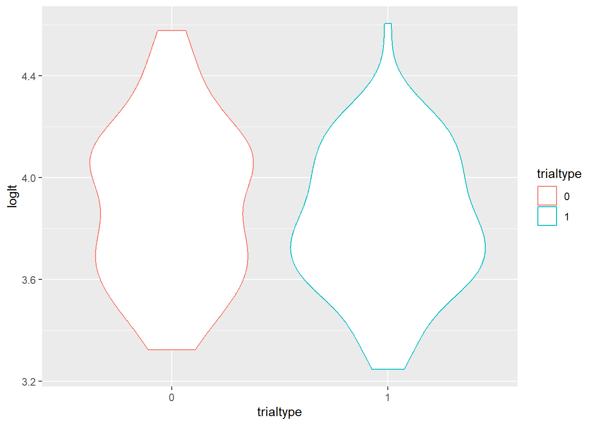
Looking at the violin plot and boxplot, there might be a slight difference between the two trial types. There might also not be. We could also look at this on an individual level.
ggplot(aes(x = trialtype, y = loglt, col = trialtype), data = data) +
geom_violin() + facet_wrap(vars(id))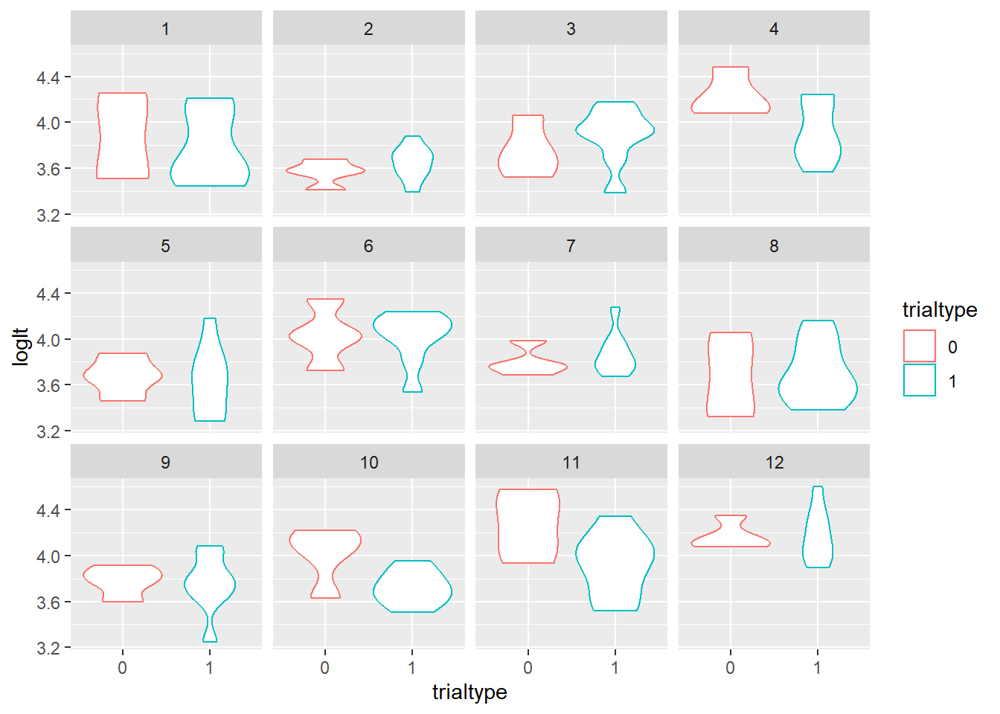
Now we are going to rely on the default priors in brms and look how we can use posterior predictive checks to help us change our model. In the first model we are going to try and explain the log looking time by using trial number (time) and trial type. We also include an autoregressive effect over time as infants might experience fatigue during the experiment and this might build up over time.
Code
fit_ar <- brm(data = data,
loglt ~ 1 + trialnr + trialtype +
ar(time = trialnr, gr = id, cov = TRUE),
sample_prior = "yes", seed = 383)Compiling Stan program...Start sampling
SAMPLING FOR MODEL 'anon_model' NOW (CHAIN 1).
Chain 1:
Chain 1: Gradient evaluation took 0.001269 seconds
Chain 1: 1000 transitions using 10 leapfrog steps per transition would take 12.69 seconds.
Chain 1: Adjust your expectations accordingly!
Chain 1:
Chain 1:
Chain 1: Iteration: 1 / 2000 [ 0%] (Warmup)
Chain 1: Iteration: 200 / 2000 [ 10%] (Warmup)
Chain 1: Iteration: 400 / 2000 [ 20%] (Warmup)
Chain 1: Iteration: 600 / 2000 [ 30%] (Warmup)
Chain 1: Iteration: 800 / 2000 [ 40%] (Warmup)
Chain 1: Iteration: 1000 / 2000 [ 50%] (Warmup)
Chain 1: Iteration: 1001 / 2000 [ 50%] (Sampling)
Chain 1: Iteration: 1200 / 2000 [ 60%] (Sampling)
Chain 1: Iteration: 1400 / 2000 [ 70%] (Sampling)
Chain 1: Iteration: 1600 / 2000 [ 80%] (Sampling)
Chain 1: Iteration: 1800 / 2000 [ 90%] (Sampling)
Chain 1: Iteration: 2000 / 2000 [100%] (Sampling)
Chain 1:
Chain 1: Elapsed Time: 1.278 seconds (Warm-up)
Chain 1: 0.869 seconds (Sampling)
Chain 1: 2.147 seconds (Total)
Chain 1:
SAMPLING FOR MODEL 'anon_model' NOW (CHAIN 2).
Chain 2:
Chain 2: Gradient evaluation took 0.000239 seconds
Chain 2: 1000 transitions using 10 leapfrog steps per transition would take 2.39 seconds.
Chain 2: Adjust your expectations accordingly!
Chain 2:
Chain 2:
Chain 2: Iteration: 1 / 2000 [ 0%] (Warmup)
Chain 2: Iteration: 200 / 2000 [ 10%] (Warmup)
Chain 2: Iteration: 400 / 2000 [ 20%] (Warmup)
Chain 2: Iteration: 600 / 2000 [ 30%] (Warmup)
Chain 2: Iteration: 800 / 2000 [ 40%] (Warmup)
Chain 2: Iteration: 1000 / 2000 [ 50%] (Warmup)
Chain 2: Iteration: 1001 / 2000 [ 50%] (Sampling)
Chain 2: Iteration: 1200 / 2000 [ 60%] (Sampling)
Chain 2: Iteration: 1400 / 2000 [ 70%] (Sampling)
Chain 2: Iteration: 1600 / 2000 [ 80%] (Sampling)
Chain 2: Iteration: 1800 / 2000 [ 90%] (Sampling)
Chain 2: Iteration: 2000 / 2000 [100%] (Sampling)
Chain 2:
Chain 2: Elapsed Time: 1.42 seconds (Warm-up)
Chain 2: 1.063 seconds (Sampling)
Chain 2: 2.483 seconds (Total)
Chain 2:
SAMPLING FOR MODEL 'anon_model' NOW (CHAIN 3).
Chain 3:
Chain 3: Gradient evaluation took 0.000154 seconds
Chain 3: 1000 transitions using 10 leapfrog steps per transition would take 1.54 seconds.
Chain 3: Adjust your expectations accordingly!
Chain 3:
Chain 3:
Chain 3: Iteration: 1 / 2000 [ 0%] (Warmup)
Chain 3: Iteration: 200 / 2000 [ 10%] (Warmup)
Chain 3: Iteration: 400 / 2000 [ 20%] (Warmup)
Chain 3: Iteration: 600 / 2000 [ 30%] (Warmup)
Chain 3: Iteration: 800 / 2000 [ 40%] (Warmup)
Chain 3: Iteration: 1000 / 2000 [ 50%] (Warmup)
Chain 3: Iteration: 1001 / 2000 [ 50%] (Sampling)
Chain 3: Iteration: 1200 / 2000 [ 60%] (Sampling)
Chain 3: Iteration: 1400 / 2000 [ 70%] (Sampling)
Chain 3: Iteration: 1600 / 2000 [ 80%] (Sampling)
Chain 3: Iteration: 1800 / 2000 [ 90%] (Sampling)
Chain 3: Iteration: 2000 / 2000 [100%] (Sampling)
Chain 3:
Chain 3: Elapsed Time: 1.284 seconds (Warm-up)
Chain 3: 0.937 seconds (Sampling)
Chain 3: 2.221 seconds (Total)
Chain 3:
SAMPLING FOR MODEL 'anon_model' NOW (CHAIN 4).
Chain 4:
Chain 4: Gradient evaluation took 0.000165 seconds
Chain 4: 1000 transitions using 10 leapfrog steps per transition would take 1.65 seconds.
Chain 4: Adjust your expectations accordingly!
Chain 4:
Chain 4:
Chain 4: Iteration: 1 / 2000 [ 0%] (Warmup)
Chain 4: Iteration: 200 / 2000 [ 10%] (Warmup)
Chain 4: Iteration: 400 / 2000 [ 20%] (Warmup)
Chain 4: Iteration: 600 / 2000 [ 30%] (Warmup)
Chain 4: Iteration: 800 / 2000 [ 40%] (Warmup)
Chain 4: Iteration: 1000 / 2000 [ 50%] (Warmup)
Chain 4: Iteration: 1001 / 2000 [ 50%] (Sampling)
Chain 4: Iteration: 1200 / 2000 [ 60%] (Sampling)
Chain 4: Iteration: 1400 / 2000 [ 70%] (Sampling)
Chain 4: Iteration: 1600 / 2000 [ 80%] (Sampling)
Chain 4: Iteration: 1800 / 2000 [ 90%] (Sampling)
Chain 4: Iteration: 2000 / 2000 [100%] (Sampling)
Chain 4:
Chain 4: Elapsed Time: 1.233 seconds (Warm-up)
Chain 4: 0.912 seconds (Sampling)
Chain 4: 2.145 seconds (Total)
Chain 4: Now let’s look at the results.
fit_ar Family: gaussian
Links: mu = identity; sigma = identity
Formula: loglt ~ 1 + trialnr + trialtype + ar(time = trialnr, gr = id, cov = TRUE)
Data: data (Number of observations: 144)
Draws: 4 chains, each with iter = 2000; warmup = 1000; thin = 1;
total post-warmup draws = 4000
Correlation Structures:
Estimate Est.Error l-95% CI u-95% CI Rhat Bulk_ESS Tail_ESS
ar[1] 0.48 0.08 0.33 0.63 1.00 4033 3137
Regression Coefficients:
Estimate Est.Error l-95% CI u-95% CI Rhat Bulk_ESS Tail_ESS
Intercept 3.89 0.08 3.72 4.05 1.00 4918 3234
trialnr 0.00 0.01 -0.02 0.02 1.00 4800 2971
trialtype1 -0.06 0.04 -0.14 0.01 1.00 4902 3155
Further Distributional Parameters:
Estimate Est.Error l-95% CI u-95% CI Rhat Bulk_ESS Tail_ESS
sigma 0.26 0.02 0.23 0.29 1.00 4742 3119
Draws were sampled using sampling(NUTS). For each parameter, Bulk_ESS
and Tail_ESS are effective sample size measures, and Rhat is the potential
scale reduction factor on split chains (at convergence, Rhat = 1).plot(fit_ar)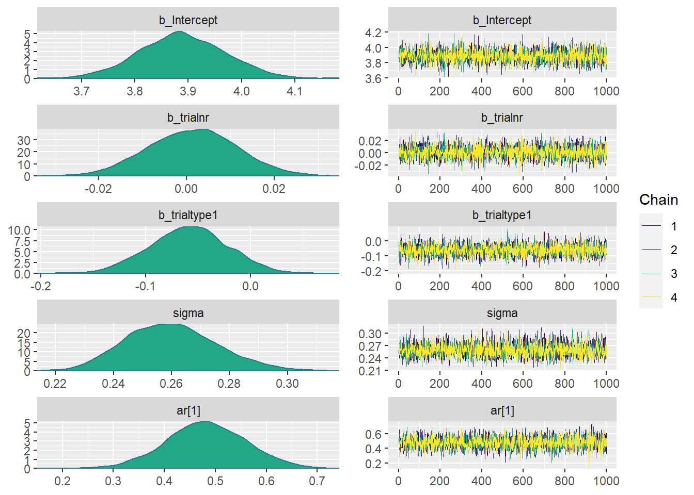
Fitting seems to have gone well. Nicely mixed chain plots, smooth densities, nice Rhat and Effective sample size. Let’s look at the posterior predictives.
pp_check(fit_ar, ndraws = 100)
pp_check(fit_ar, type = "stat_2d")Using all posterior draws for ppc type 'stat_2d' by default.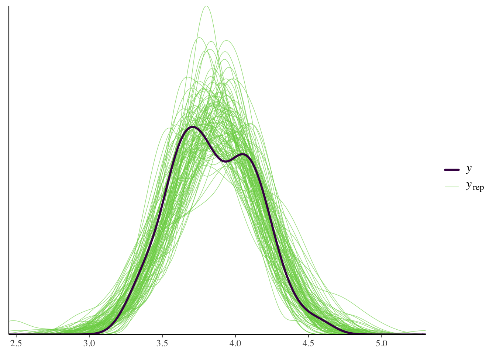
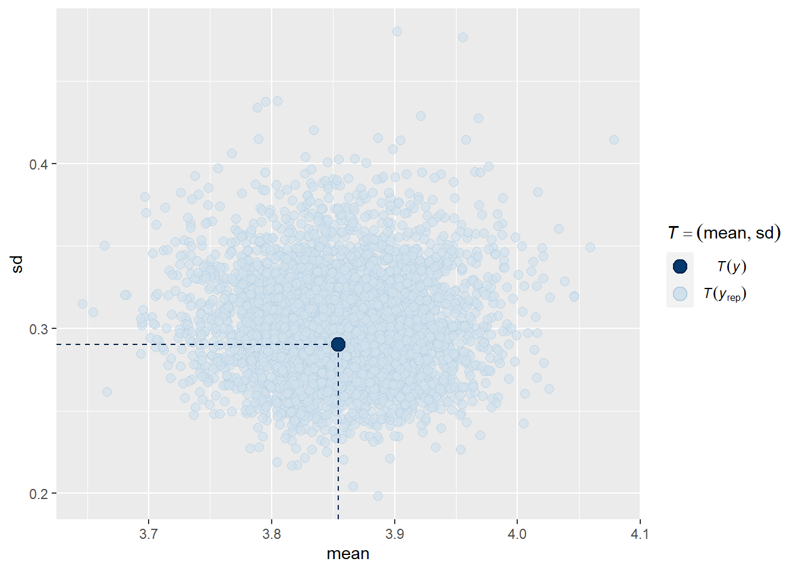
If we look at the posterior predictive plots that we used before, all seems quite well. But, we are looking at a very aggregated level. Perhaps we should zoom in a little bit. We use the intervals_grouped type of plot so we can look for each individual on each time point how the predictions look.
pp_check(fit_ar, prefix = "ppc", type = "intervals_grouped", group = "id",
prob = 0.5, prob_outer = 0.95) + ylim(2.5, 5) Using all posterior draws for ppc type 'intervals_grouped' by default.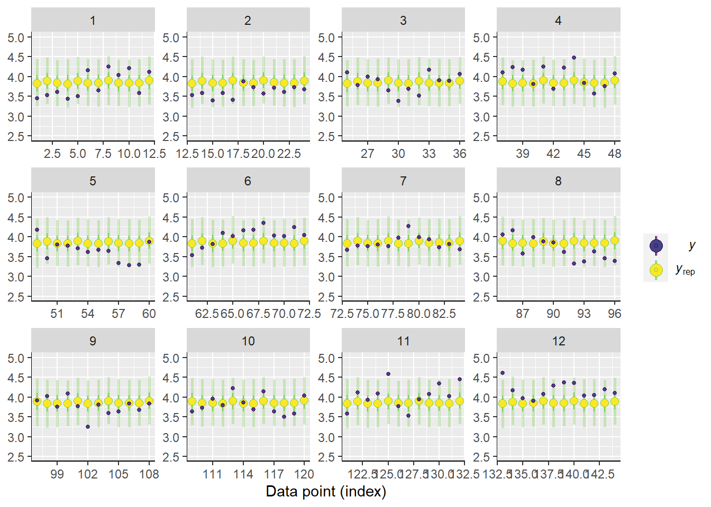
This is great, we see the predictions for each individual at each time point. And what turns out? Our model is doing a terrible job! We are basically predicting the same thing for each time point of each individual with very very tiny shifts based on the trial type. We just predict with enough uncertainty and capture most measurements. Not a useful model at all actually.
So what can we change? We didn’t include any multilevel structure, whilst the data follows a multilevel structure, namely trials within individuals. Let’s try a different model. Let us include a random effect for the intercept, the trial number and the trial type. This model is a bit different, we are for instance modelling the trial numbers as random effect but are not including an autoregressive effect. But, we are taking the hierarchical structure of the data more into account. Let’s try.
Code
fit_ml <- brm(data = data,
loglt ~ 1 + trialnr + trialtype + (1 + trialnr + trialtype | id),
sample_prior = "yes", seed = 12351)Compiling Stan program...Start sampling
SAMPLING FOR MODEL 'anon_model' NOW (CHAIN 1).
Chain 1:
Chain 1: Gradient evaluation took 0.000548 seconds
Chain 1: 1000 transitions using 10 leapfrog steps per transition would take 5.48 seconds.
Chain 1: Adjust your expectations accordingly!
Chain 1:
Chain 1:
Chain 1: Iteration: 1 / 2000 [ 0%] (Warmup)
Chain 1: Iteration: 200 / 2000 [ 10%] (Warmup)
Chain 1: Iteration: 400 / 2000 [ 20%] (Warmup)
Chain 1: Iteration: 600 / 2000 [ 30%] (Warmup)
Chain 1: Iteration: 800 / 2000 [ 40%] (Warmup)
Chain 1: Iteration: 1000 / 2000 [ 50%] (Warmup)
Chain 1: Iteration: 1001 / 2000 [ 50%] (Sampling)
Chain 1: Iteration: 1200 / 2000 [ 60%] (Sampling)
Chain 1: Iteration: 1400 / 2000 [ 70%] (Sampling)
Chain 1: Iteration: 1600 / 2000 [ 80%] (Sampling)
Chain 1: Iteration: 1800 / 2000 [ 90%] (Sampling)
Chain 1: Iteration: 2000 / 2000 [100%] (Sampling)
Chain 1:
Chain 1: Elapsed Time: 5.253 seconds (Warm-up)
Chain 1: 2.016 seconds (Sampling)
Chain 1: 7.269 seconds (Total)
Chain 1:
SAMPLING FOR MODEL 'anon_model' NOW (CHAIN 2).
Chain 2:
Chain 2: Gradient evaluation took 0.00012 seconds
Chain 2: 1000 transitions using 10 leapfrog steps per transition would take 1.2 seconds.
Chain 2: Adjust your expectations accordingly!
Chain 2:
Chain 2:
Chain 2: Iteration: 1 / 2000 [ 0%] (Warmup)
Chain 2: Iteration: 200 / 2000 [ 10%] (Warmup)
Chain 2: Iteration: 400 / 2000 [ 20%] (Warmup)
Chain 2: Iteration: 600 / 2000 [ 30%] (Warmup)
Chain 2: Iteration: 800 / 2000 [ 40%] (Warmup)
Chain 2: Iteration: 1000 / 2000 [ 50%] (Warmup)
Chain 2: Iteration: 1001 / 2000 [ 50%] (Sampling)
Chain 2: Iteration: 1200 / 2000 [ 60%] (Sampling)
Chain 2: Iteration: 1400 / 2000 [ 70%] (Sampling)
Chain 2: Iteration: 1600 / 2000 [ 80%] (Sampling)
Chain 2: Iteration: 1800 / 2000 [ 90%] (Sampling)
Chain 2: Iteration: 2000 / 2000 [100%] (Sampling)
Chain 2:
Chain 2: Elapsed Time: 5.497 seconds (Warm-up)
Chain 2: 2.218 seconds (Sampling)
Chain 2: 7.715 seconds (Total)
Chain 2:
SAMPLING FOR MODEL 'anon_model' NOW (CHAIN 3).
Chain 3:
Chain 3: Gradient evaluation took 7.8e-05 seconds
Chain 3: 1000 transitions using 10 leapfrog steps per transition would take 0.78 seconds.
Chain 3: Adjust your expectations accordingly!
Chain 3:
Chain 3:
Chain 3: Iteration: 1 / 2000 [ 0%] (Warmup)
Chain 3: Iteration: 200 / 2000 [ 10%] (Warmup)
Chain 3: Iteration: 400 / 2000 [ 20%] (Warmup)
Chain 3: Iteration: 600 / 2000 [ 30%] (Warmup)
Chain 3: Iteration: 800 / 2000 [ 40%] (Warmup)
Chain 3: Iteration: 1000 / 2000 [ 50%] (Warmup)
Chain 3: Iteration: 1001 / 2000 [ 50%] (Sampling)
Chain 3: Iteration: 1200 / 2000 [ 60%] (Sampling)
Chain 3: Iteration: 1400 / 2000 [ 70%] (Sampling)
Chain 3: Iteration: 1600 / 2000 [ 80%] (Sampling)
Chain 3: Iteration: 1800 / 2000 [ 90%] (Sampling)
Chain 3: Iteration: 2000 / 2000 [100%] (Sampling)
Chain 3:
Chain 3: Elapsed Time: 5.576 seconds (Warm-up)
Chain 3: 4.171 seconds (Sampling)
Chain 3: 9.747 seconds (Total)
Chain 3:
SAMPLING FOR MODEL 'anon_model' NOW (CHAIN 4).
Chain 4:
Chain 4: Gradient evaluation took 0.000112 seconds
Chain 4: 1000 transitions using 10 leapfrog steps per transition would take 1.12 seconds.
Chain 4: Adjust your expectations accordingly!
Chain 4:
Chain 4:
Chain 4: Iteration: 1 / 2000 [ 0%] (Warmup)
Chain 4: Iteration: 200 / 2000 [ 10%] (Warmup)
Chain 4: Iteration: 400 / 2000 [ 20%] (Warmup)
Chain 4: Iteration: 600 / 2000 [ 30%] (Warmup)
Chain 4: Iteration: 800 / 2000 [ 40%] (Warmup)
Chain 4: Iteration: 1000 / 2000 [ 50%] (Warmup)
Chain 4: Iteration: 1001 / 2000 [ 50%] (Sampling)
Chain 4: Iteration: 1200 / 2000 [ 60%] (Sampling)
Chain 4: Iteration: 1400 / 2000 [ 70%] (Sampling)
Chain 4: Iteration: 1600 / 2000 [ 80%] (Sampling)
Chain 4: Iteration: 1800 / 2000 [ 90%] (Sampling)
Chain 4: Iteration: 2000 / 2000 [100%] (Sampling)
Chain 4:
Chain 4: Elapsed Time: 6.49 seconds (Warm-up)
Chain 4: 2.238 seconds (Sampling)
Chain 4: 8.728 seconds (Total)
Chain 4: Warning: There were 2 divergent transitions after warmup. See
https://mc-stan.org/misc/warnings.html#divergent-transitions-after-warmup
to find out why this is a problem and how to eliminate them.Warning: Examine the pairs() plot to diagnose sampling problemsLet’s go through the same first checks.
fit_mlWarning: There were 2 divergent transitions after warmup. Increasing
adapt_delta above 0.8 may help. See
http://mc-stan.org/misc/warnings.html#divergent-transitions-after-warmup Family: gaussian
Links: mu = identity; sigma = identity
Formula: loglt ~ 1 + trialnr + trialtype + (1 + trialnr + trialtype | id)
Data: data (Number of observations: 144)
Draws: 4 chains, each with iter = 2000; warmup = 1000; thin = 1;
total post-warmup draws = 4000
Multilevel Hyperparameters:
~id (Number of levels: 12)
Estimate Est.Error l-95% CI u-95% CI Rhat Bulk_ESS
sd(Intercept) 0.23 0.09 0.08 0.44 1.00 906
sd(trialnr) 0.03 0.01 0.01 0.06 1.00 1024
sd(trialtype1) 0.09 0.06 0.00 0.23 1.00 965
cor(Intercept,trialnr) -0.39 0.34 -0.85 0.45 1.00 1245
cor(Intercept,trialtype1) -0.28 0.45 -0.93 0.69 1.00 2939
cor(trialnr,trialtype1) -0.13 0.45 -0.87 0.77 1.00 2841
Tail_ESS
sd(Intercept) 982
sd(trialnr) 1675
sd(trialtype1) 1991
cor(Intercept,trialnr) 1617
cor(Intercept,trialtype1) 2915
cor(trialnr,trialtype1) 2821
Regression Coefficients:
Estimate Est.Error l-95% CI u-95% CI Rhat Bulk_ESS Tail_ESS
Intercept 3.90 0.09 3.72 4.07 1.00 1869 2041
trialnr -0.00 0.01 -0.02 0.02 1.00 1293 1745
trialtype1 -0.06 0.05 -0.16 0.04 1.00 2328 1923
Further Distributional Parameters:
Estimate Est.Error l-95% CI u-95% CI Rhat Bulk_ESS Tail_ESS
sigma 0.23 0.02 0.20 0.26 1.00 2303 2341
Draws were sampled using sampling(NUTS). For each parameter, Bulk_ESS
and Tail_ESS are effective sample size measures, and Rhat is the potential
scale reduction factor on split chains (at convergence, Rhat = 1).plot(fit_ml, variable = c("b_Intercept", "b_trialnr", "b_trialtype1"))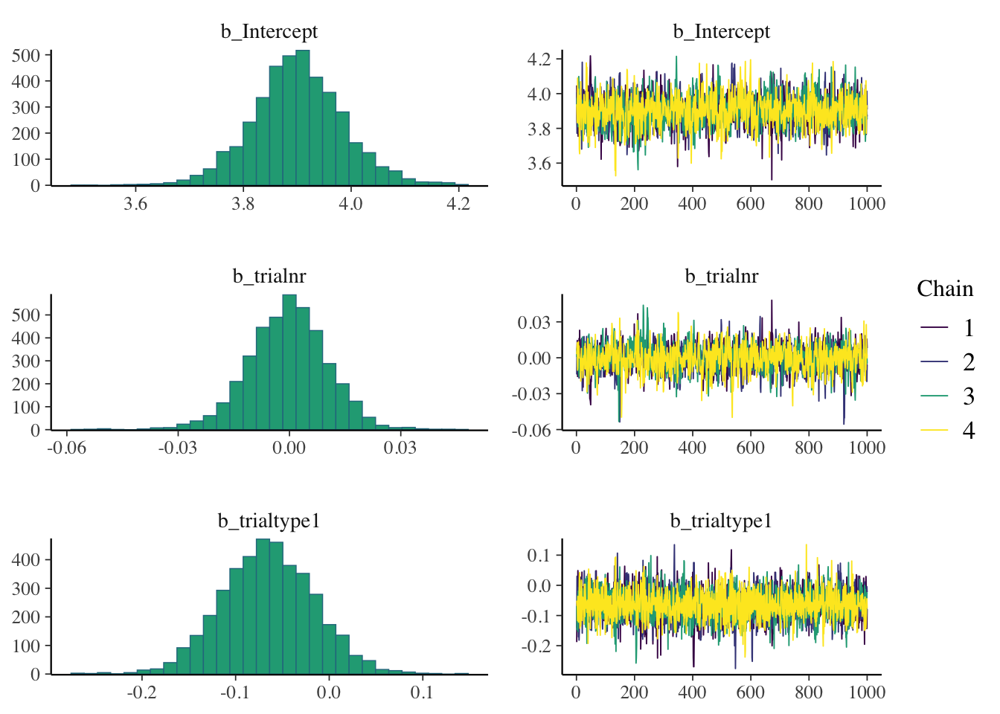
First signs look okay. Nicely mixed chain plots, smooth densities, nice Rhat and Effective sample size. Let’s look at the posterior predictives.
pp_check(fit_ml, type = "dens_overlay_grouped", ndraws = 100, group = "trialtype")
pp_check(fit_ml, type = "stat_2d")Using all posterior draws for ppc type 'stat_2d' by default.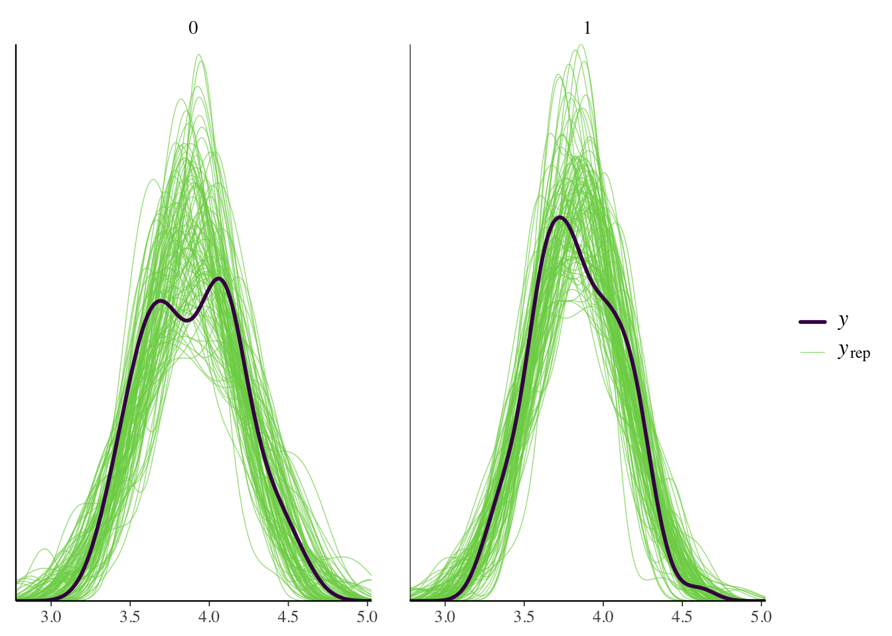
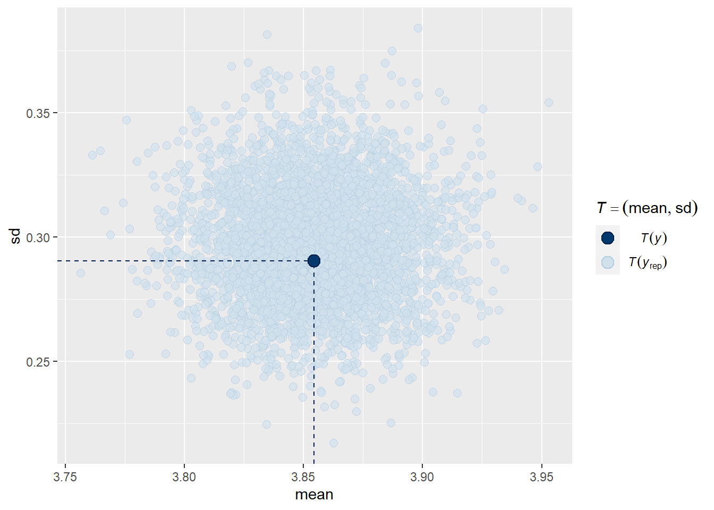
Okay, if we split out per trial type our model doesn’t fully capture all bumps but it’s not to bad. The general mean and standard deviation are captured well. Now let’s check where we encountered problems last time.
pp_check(fit_ml, prefix = "ppc", type = "intervals_grouped", group = "id",
prob = 0.5, prob_outer = 0.95) + ylim(2.5, 5) Using all posterior draws for ppc type 'intervals_grouped' by default.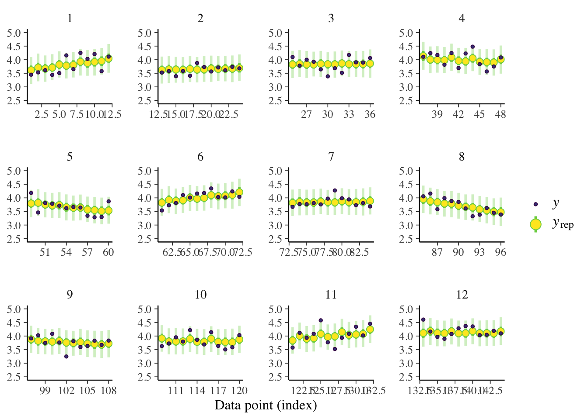
We are now at least making differentiation between trial numbers, individuals and trends within individuals. See for instance the contrast between infant number 1 and infant number 8. If you’d look closely these predictions are also more specific compared to the earlier predictions, the uncertainty intervals are less wide. We still seem to capture most data points. Therefore, we can conclude that we made an improvement in the model. A next step could be to include autoregressive effects for example and see if the model further improves.
We hope this example illustrates that we need to think at what level we want to check our model. Perhaps on an overall level we are doing fine, but if we are interested in data at a individual level or even at a trial level, we need to look how we are doing there. Posterior predictive checks can help to identify what is going on (e.g. we do not differentiate between individuals). We can adjust and hopefully improve our models based on that information.
Conclusion
In this comprehensive tutorial, we’ve navigated through the realm of predictive checking in Bayesian estimation using the brms package. We started by understanding the importance and roles of prior and posterior predictive checking in a Bayesian workflow. Using a simulated case of Dutch bike thefts, we grasped how prior predictive checking enables us to assess our model and its priors before applying them to real data. We also demonstrated how to adjust our model based on these checks. In the case of posterior predictive checking, we saw how it allows us to evaluate how well the model fits the observed data and how it performs against new data. In our case study, we applied posterior predictive checks on infants’ speech discrimination data. Through this process, we were able to evaluate the validity of our model and improve it by incorporating a multilevel structure. As this tutorial comes to a close, we hope that the concepts, techniques, and code examples shared equip you to confidently apply predictive checking in your Bayesian analyses.
Original Computing Environment
devtools::session_info()─ Session info ───────────────────────────────────────────────────────────────
setting value
version R version 4.4.1 (2024-06-14 ucrt)
os Windows 10 x64 (build 19045)
system x86_64, mingw32
ui RTerm
language (EN)
collate German_Germany.utf8
ctype German_Germany.utf8
tz Europe/Berlin
date 2024-07-26
pandoc 3.1.11 @ C:/Program Files/RStudio/resources/app/bin/quarto/bin/tools/ (via rmarkdown)
─ Packages ───────────────────────────────────────────────────────────────────
! package * version date (UTC) lib source
abind 1.4-5 2016-07-21 [1] CRAN (R 4.4.0)
backports 1.5.0 2024-05-23 [1] CRAN (R 4.4.0)
bayesplot * 1.11.1 2024-02-15 [1] CRAN (R 4.4.1)
bridgesampling 1.1-2 2021-04-16 [1] CRAN (R 4.4.1)
brms * 2.21.0 2024-03-20 [1] CRAN (R 4.4.1)
Brobdingnag 1.2-9 2022-10-19 [1] CRAN (R 4.4.1)
cachem 1.1.0 2024-05-16 [1] CRAN (R 4.4.1)
checkmate 2.3.1 2023-12-04 [1] CRAN (R 4.4.1)
cli 3.6.3 2024-06-21 [1] CRAN (R 4.4.1)
coda 0.19-4.1 2024-01-31 [1] CRAN (R 4.4.1)
codetools 0.2-20 2024-03-31 [2] CRAN (R 4.4.1)
colorspace 2.1-0 2023-01-23 [1] CRAN (R 4.4.1)
devtools 2.4.5 2022-10-11 [1] CRAN (R 4.4.1)
digest 0.6.36 2024-06-23 [1] CRAN (R 4.4.1)
distributional 0.4.0 2024-02-07 [1] CRAN (R 4.4.1)
dplyr * 1.1.4 2023-11-17 [1] CRAN (R 4.4.1)
ellipsis 0.3.2 2021-04-29 [1] CRAN (R 4.4.1)
evaluate 0.24.0 2024-06-10 [1] CRAN (R 4.4.1)
fansi 1.0.6 2023-12-08 [1] CRAN (R 4.4.1)
farver 2.1.2 2024-05-13 [1] CRAN (R 4.4.1)
fastmap 1.2.0 2024-05-15 [1] CRAN (R 4.4.1)
forcats * 1.0.0 2023-01-29 [1] CRAN (R 4.4.1)
fs 1.6.4 2024-04-25 [1] CRAN (R 4.4.1)
generics 0.1.3 2022-07-05 [1] CRAN (R 4.4.1)
ggplot2 * 3.5.1 2024-04-23 [1] CRAN (R 4.4.1)
glue 1.7.0 2024-01-09 [1] CRAN (R 4.4.1)
gridExtra 2.3 2017-09-09 [1] CRAN (R 4.4.1)
gtable 0.3.5 2024-04-22 [1] CRAN (R 4.4.1)
hms 1.1.3 2023-03-21 [1] CRAN (R 4.4.1)
htmltools 0.5.8.1 2024-04-04 [1] CRAN (R 4.4.1)
htmlwidgets 1.6.4 2023-12-06 [1] CRAN (R 4.4.1)
httpuv 1.6.15 2024-03-26 [1] CRAN (R 4.4.1)
inline 0.3.19 2021-05-31 [1] CRAN (R 4.4.1)
jsonlite 1.8.8 2023-12-04 [1] CRAN (R 4.4.1)
knitr 1.47 2024-05-29 [1] CRAN (R 4.4.1)
labeling 0.4.3 2023-08-29 [1] CRAN (R 4.4.0)
later 1.3.2 2023-12-06 [1] CRAN (R 4.4.1)
lattice 0.22-6 2024-03-20 [2] CRAN (R 4.4.1)
lifecycle 1.0.4 2023-11-07 [1] CRAN (R 4.4.1)
loo 2.7.0 2024-02-24 [1] CRAN (R 4.4.1)
lubridate * 1.9.3 2023-09-27 [1] CRAN (R 4.4.1)
magrittr 2.0.3 2022-03-30 [1] CRAN (R 4.4.1)
Matrix 1.7-0 2024-04-26 [2] CRAN (R 4.4.1)
matrixStats 1.3.0 2024-04-11 [1] CRAN (R 4.4.1)
memoise 2.0.1 2021-11-26 [1] CRAN (R 4.4.1)
mime 0.12 2021-09-28 [1] CRAN (R 4.4.0)
miniUI 0.1.1.1 2018-05-18 [1] CRAN (R 4.4.1)
munsell 0.5.1 2024-04-01 [1] CRAN (R 4.4.1)
mvtnorm 1.2-5 2024-05-21 [1] CRAN (R 4.4.1)
nlme 3.1-164 2023-11-27 [2] CRAN (R 4.4.1)
pillar 1.9.0 2023-03-22 [1] CRAN (R 4.4.1)
pkgbuild 1.4.4 2024-03-17 [1] CRAN (R 4.4.1)
pkgconfig 2.0.3 2019-09-22 [1] CRAN (R 4.4.1)
pkgload 1.3.4 2024-01-16 [1] CRAN (R 4.4.1)
plyr 1.8.9 2023-10-02 [1] CRAN (R 4.4.1)
posterior 1.5.0 2023-10-31 [1] CRAN (R 4.4.1)
profvis 0.3.8 2023-05-02 [1] CRAN (R 4.4.1)
promises 1.3.0 2024-04-05 [1] CRAN (R 4.4.1)
purrr * 1.0.2 2023-08-10 [1] CRAN (R 4.4.1)
QuickJSR 1.2.2 2024-06-07 [1] CRAN (R 4.4.1)
R6 2.5.1 2021-08-19 [1] CRAN (R 4.4.1)
Rcpp * 1.0.12 2024-01-09 [1] CRAN (R 4.4.1)
D RcppParallel 5.1.7 2023-02-27 [1] CRAN (R 4.4.1)
readr * 2.1.5 2024-01-10 [1] CRAN (R 4.4.1)
remotes 2.5.0 2024-03-17 [1] CRAN (R 4.4.1)
reshape2 1.4.4 2020-04-09 [1] CRAN (R 4.4.1)
rlang 1.1.4 2024-06-04 [1] CRAN (R 4.4.1)
rmarkdown 2.27 2024-05-17 [1] CRAN (R 4.4.1)
rstan 2.35.0.9000 2024-06-22 [1] https://stan-dev.r-universe.dev (R 4.4.0)
rstantools 2.4.0 2024-01-31 [1] CRAN (R 4.4.1)
rstudioapi 0.16.0 2024-03-24 [1] CRAN (R 4.4.1)
scales 1.3.0 2023-11-28 [1] CRAN (R 4.4.1)
sessioninfo 1.2.2 2021-12-06 [1] CRAN (R 4.4.1)
shiny 1.8.1.1 2024-04-02 [1] CRAN (R 4.4.1)
StanHeaders 2.35.0.9000 2024-06-22 [1] https://stan-dev.r-universe.dev (R 4.4.0)
stringi 1.8.4 2024-05-06 [1] CRAN (R 4.4.0)
stringr * 1.5.1 2023-11-14 [1] CRAN (R 4.4.1)
tensorA 0.36.2.1 2023-12-13 [1] CRAN (R 4.4.0)
tibble * 3.2.1 2023-03-20 [1] CRAN (R 4.4.1)
tidyr * 1.3.1 2024-01-24 [1] CRAN (R 4.4.1)
tidyselect 1.2.1 2024-03-11 [1] CRAN (R 4.4.1)
tidyverse * 2.0.0 2023-02-22 [1] CRAN (R 4.4.1)
timechange 0.3.0 2024-01-18 [1] CRAN (R 4.4.1)
tzdb 0.4.0 2023-05-12 [1] CRAN (R 4.4.1)
urlchecker 1.0.1 2021-11-30 [1] CRAN (R 4.4.1)
usethis 2.2.3 2024-02-19 [1] CRAN (R 4.4.1)
utf8 1.2.4 2023-10-22 [1] CRAN (R 4.4.1)
vctrs 0.6.5 2023-12-01 [1] CRAN (R 4.4.1)
withr 3.0.0 2024-01-16 [1] CRAN (R 4.4.1)
xfun 0.45 2024-06-16 [1] CRAN (R 4.4.1)
xtable 1.8-4 2019-04-21 [1] CRAN (R 4.4.1)
yaml 2.3.8 2023-12-11 [1] CRAN (R 4.4.0)
[1] C:/Users/Florian/AppData/Local/R/win-library/4.4
[2] C:/Program Files/R/R-4.4.1/library
D ── DLL MD5 mismatch, broken installation.
──────────────────────────────────────────────────────────────────────────────Footnotes
In practice, unfortunately, it is not so easy to collect new data. A more realistic approach would therefore be to split our existing data in a training and test set and use the training set to fit the model and the test set to perform the posterior predictive checks on. This will come up in a later tutorial.↩︎
See for instance: Schulz, S., Zondervan-Zwijnenburg, M., Nelemans, S. A., Veen, D., Oldehinkel, A. J., Branje, S., & Meeus, W. (2021). Systematically defined informative priors in Bayesian estimation: An empirical application on the transmission of internalizing symptoms through mother-adolescent interaction behavior. Frontiers in Psychology, 12, 620802. https://doi.org/10.3389/fpsyg.2021.620802↩︎
In the output you can notice that next to the b_Intercept, there also is a Intercept parameter. This is due to the fact that
brmsmean-centeres the predictors prior to the analysis. The Intercept parameter is the mean-centered parameter, the b_Intercept parameter is the parameter transformed back to its original scale. For more information see also this post.↩︎de Klerk, M., Veen, D., Wijnen, F., & de Bree, E. (2019). A step forward: Bayesian hierarchical modelling as a tool in assessment of individual discrimination performance. Infant Behavior and Development, 57, 101345.↩︎